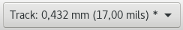
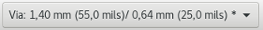
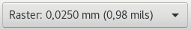
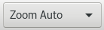
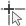

Referenzhandbuch
Copyright
Dieses Dokument ist geschützt © 2010-2015 durch deren Beitragende welche nachfolgend aufgeführt sind. Sie können es nach den Bedingungen der GNU General Public License (https://www.gnu.org/licenses/gpl.html), Version 3 oder später, oder der Creative Commons Attribution License (https://creativecommons.org/licenses/by/3.0/), Version 3.0 oder später verteilen oder verändern.
Alle Markenrechtsnamen in diesem Guide gehören den rechtmäßigen Eigentümern.
Mitwirkende
Jean-Pierre Charras, Fabrizio Tappero.
Übersetzung
André S. <ansc.de@gmail.com> 2016, Carsten Schönert <c.schoenert@t-online.de> 2017
Feedback
Bitte senden Sie alle Fehlermeldungen, Vorschläge oder neue Versionen an:
-
Zum KiCad-Dokument: https://github.com/KiCad/kicad-doc/issues
-
Zur KiCad-Software: https://bugs.launchpad.net/kicad
-
Zur KiCad-Software i18n: https://github.com/KiCad/kicad-i18n/issues
Datum der Veröffentlichung und Softwareversion
17.03 2014
1. Einführung zu Pcbnew
1.1. Beschreibung
Pcbnew ist eine leistungsfähige Leiterplattensoftware für die Betriebssysteme Linux, Microsoft Windows und Apple OS X. Pcbnew wird zusammen mit dem Schaltplanprogramm Eeschema verwendet, um Leiterplatten zu erstellen.
Pcbnew verwaltet Bibliotheken von Footprints. Jeder Footprint ist eine Zeichnung eines realen Bauteils einschließlich seines Lötflächenrasters (die Anordnung der Lötflächen auf der Leiterplatte). Die benötigten Footprints werden automatisch während des Einlesens der Netzliste geladen. Jede Änderung der Footprintauswahl oder Referenzierung kann im Schaltplan vorgenommen und in Pcbnew aktualisiert werden, indem die Netzliste aktualisiert und in Pcbnew neu eingelesen wird.
Pcbnew stellt ein DRC Werkzeug (Design Rule Check = Prüfung der Entwurfsregeln) bereit, das verhindert, dass Netze verbunden werden, die nicht verbunden sein sollen oder Probleme mit Abständen zu Leiterbahnen und Lötflächen aufzeigt. Wenn Sie den interaktiven Router verwenden, prüft dieser kontinuierlich auf Designregeln und hilft dabei automatisch einzelne Leiterbahnen zu verlegen.
Pcbnew erlaubt das Anzeigen von Luftlinien, dies sind dünne Linien die Lötflächen von Footprints verbinden, die im Schaltplan verbunden sind. Diese Verbindungen bewegen sich dynamisch mit, wenn Leiterbahnen und Footprints bewegt werden.
Pcbnew hat einen einfachen aber effektiven Autorouter, um das Anfertigen von Leiterplatten zu unterstützen. Ein Export/Import im SPECCTRA dsn Format erlaubt die Benutzung von leistungsfähigeren Autoroutern.
Pcbnew stellt Möglichkeiten speziell für das Anfertigen von Höchstfrequenz Mikrowellenschaltungen zur Verfügung, wie zum Beispiel notwendige trapezförmige und komplex geformte Lötflächen, automatisches Erstellen von Induktivitäten auf der Leiterplatte, usw.).
1.2. Prinzipielle Design Eigenschaften
Die kleinste Einheit in Pcbnew ist 1 Nanometer. Alle Abmessungen werden als ganzzahlige Nanometer gespeichert.
Pcbnew kann bis zu 32 Kupferlagen erzeugen, 14 technische Lagen (Bestückungsdruck, Lötstopplack, Lage für Bauteil Klebung, Lötpaste und Kantenschnitte) plus 4 Hilfslagen (Zeichnungen und Kommentare) und verwaltet in Echtzeit die Luftlinien Anzeige von fehlenden Leiterbahnen.
Die Anzeige von Leiterplattenelementen (Leiterbahnen, Lötflächen, Text, Zeichnungen…) ist anpassbar:
-
Volldarstellung oder Umriss.
-
Mit oder ohne Leiterbahnabständen.
Für komplexe Schaltungen kann für einer bessere Darstellung die Anzeige von Lagen, Flächen und Bauteilen gezielt deaktiviert werden. Netze oder Leiterbahnen können hervorgehoben werden, um zusätzlich hohen Kontrast zur Verfügung zu stellen.
Footprints können in jedem Winkel mit einer Auflösung von 0,1 Grad gedreht werden.
Pcbnew enthält einen Footprinteditor, der das Bearbeiten einzelner Footprints erlaubt, die sich auf der Leiterplatte oder in einer Bibliothek befinden.
Der Footprinteditor enthält viele zeitsparende Werkzeuge wie:
-
Schnelle Lötflächennummerierung indem Sie einfach die Maus in der Reihenfolge über die Lötflächen bewegen, wie Sie sie nummeriert haben wollen.
-
Einfacher Erzeugung von rechteckigen und kreisförmigen Anordnungen von Lötflächen für LGA/BGA oder kreisförmige Footprints.
-
Halbautomatische Ausrichtung von Zeilen oder Spalten von Lötflächen.
Footprints haben eine Anzahl von Eigenschaften, die angepasst werden können. Die Lötflächen können rund, rechteckig, oval oder trapezförmig sein. Für bedrahtete Bauteile können die Bohrungen in der Lötfläche verschoben sein und können rund sein oder ein Schlitz. Einzelne Lötflächen können ebenfalls gedreht sein und eigene Lötstoppmasken-, Netz- oder Lötpastenabstände haben. Lötflächen können ebenso massiv angebunden sein oder über Wärmefallen für eine einfachere Fertigung. Jede Kombination von einzigartigen Lötflächen kann innerhalb eines Footprint verwendet werden.
Pcbnew erzeugt sehr einfach alle für die Fertigung notwendigen Dokumente:
-
Fertigungsausgaben:
-
Dateien für Photplotter im Gerber RS274X Format.
-
Dateien für Bohrlöcher in Excellon Format.
-
-
Plottdateien in HPGL, SVG und DXF Format.
-
Plott- und Bohrpläne im POSTSCRIPT Format.
-
Lokale Druckausgabe.
1.3. Allgemeine Anmerkungen
Aufgrund der notwendigen Steuerungstiefe wird dringend empfohlen, Pcbnew mit einer 3-Tasten-Maus zu bedienen. Viele Funktionen wie Verschieben des Bildschirminhalts oder Zoom benötigen eine 3-Tasten-Maus.
In der neuen Version von KiCad hat Pcbnew große Änderungen von die Entwicklern im CERN erfahren. Das beinhaltet Funktionen wie einen neuen Renderer (OpenGL und Cairo Ansichtsmodi), einen interaktiven "Schieben und Schubsen" (Push und Shove) Router, differenzielle- und Mäander Leiterbahnführung und -anpassung, einen überarbeiteten Footprinteditor, und viele andere Funktionen. Bitte beachten Sie, dass die meisten dieser neuen Funktionen nur in den neuen OpenGL und Cairo Ansichtsmodi verfügbar sind.
2. Installation
2.1. Installation der Software
Der Installationsvorgang ist in der Dokumentation zu KiCad beschrieben.
2.2. Verändern der Standardkonfiguration
Eine Standardkonfigurationsdatei kicad.pro wird in kicad/share/template mitgeliefert. Diese Datei wird als Erstkonfiguration für alle neuen Projekte verwendet.
Diese Konfigurationsdatei kann verändert werden, um die zu ladenden Bibliotheken zu ändern.
Um das zu tun:
-
Starten Sie Pcbnew entweder aus KiCad oder direkt. Unter Windows ist es standardmäßig in C:\kicad\bin\pcbnew.exe und unter Linux können Sie /usr/local/kicad/bin/kicad starten oder /usr/local/kicad/bin/pcbnew wenn sich die ausführbaren Dateien unter /usr/local/kicad/bin befinden.
-
Auswahl der Voreinstellungen - Bibliotheken und Verzeichnisse.
-
Bearbeiten Sie diese wie benötigt.
-
Speichern Sie die veränderte Konfiguration (Save Cfg) nach kicad/share/template/kicad.pro.
2.3. Verwalten von Footprintbibliotheken: Alte Versionen
Sie können auf die Einstellung der Bibliotheksliste aus dem Menü Einstellungen zugreifen:

Das Bild unter zeigt den Dialog, welcher es Ihnen erlaubt, die Liste der Footprintbibliotheken einzustellen:
Sie können das Benutzen, um alle Bibliotheken hinzuzufügen, die Footprints enthalten, die Sie für ihr Projekt benötigen. Sie sollten ebenfalls nicht benutzte Bibliotheken aus neuen Projekten entfernen, um Kollisionen von Footprintnamen zu vermeiden. Bitte beachten Sie, dass es eine Auffälligkeit mit der Liste der Footprintbibliotheken gibt, wenn Footprintnamen doppelt in verschiedenen Bibliotheken vorkommen. Wenn das passiert, wird der Footprint von der ersten in der Liste gefundenen Bibliothek geladen. Wenn das ein Problem ist (Sie können nicht den gewünschten Footprint laden), ändern Sie entweder die Reihenfolge der Bibliotheken in der Liste mit den "Nach oben" und "Nach unten" Schaltflächen im Dialog oben oder Sie geben dem Footprint einen eindeutigen Namen über den Footprint Editor.
2.4. Footprint Bibliotheken verwalten: .pretty Repositorys.
Seit dem Release 4.0 benutzt Pcbnew eine neue Tabellenimplementierung, um die Footprintbibliotheken zu verwalten. Die Information im vorherigen Absatz ist nicht länger gültig. Die Verwaltung der Bibliothekstabellen ist zugreifbar über:
Das Bild unten zeigt den Dialog zum Bearbeiten der Footprint Bibliothekstabelle, welcher über das Menü Einstellungen → Footprint Bibliotheken Manager geöffnet wird.
Die Tabelle der Footprintbibliotheken wird benutzt, um eine Footprintbibliothek jedes unterstützten Bibliothekstyps auf eine interne Bibliotheksbezeichnung abzubilden. Diese Bezeichnung wird verwendet, um nach Footprints zu suchen anstelle der vorherigen Methode, die von der Reihenfolge der Bibliotheksverzeichnisse abhing. Das ermöglicht Pcbnew auf Footprints mit dem gleichen Namen in unterschiedlichen Bibliotheken zuzugreifen und damit sicherzustellen, dass der richtige Footprint aus der richtigen Bibliothek geladen wird. Es erlaubt Pcbnew ebenfalls Bibliotheken anderer Leiterplattenprogramme wie Eagle und gEDA zu unterstützen.
2.4.1. Globale Footprint Bibliothekstabelle
Die globale Footprint Bibliothekstabelle enthält die Liste von Bibliotheken die immer verfügbar sind, unabhängig von der aktuell geladenen Projektdatei. Die Tabelle wird in der Datei fp-lib-table im Benutzerverzeichnis gespeichert. Der genaue Speicherort hängt vom verwendeten Betriebssystem ab.
2.4.2. Projektspezifische Footprint Bibliothekstabelle
Die projektspezifische Footprint Bibliothekstabelle enthält die Liste der Bibliotheken, die speziell für die aktuell geladene Projektdatei zur Verfügung stehen. Die projektspezifische Footprint Bibliothekstabelle kann nur bearbeitet werden, wenn sie mit der Leiterplattendatei des Projekts geladen wird. Wenn keine Projektdatei geladen ist oder es keine Datei mit der Footprint Bibliothekstabelle im Projektverzeichnis gibt, wird eine leere Tabelle erstellt. Diese kann bearbeitet werden und später mit der Leiterplattendatei gemeinsam gespeichert werden.
2.4.3. Erstkonfiguration
Wenn CvPcb oder Pcbnew das erste Mal gestartet werden und die globale Footprint Tabellendatei fp-lib-table nicht im Benutzerverzeichnis gefunden wird, wird Pcbnew versuchen, die Standard Footprint Tabellendatei fp_global_table aus dem KiCad Vorlagenverzeichnis in die Datei fp-lib-table im Benutzerverzeichnis zu kopieren. Wenn fp_global_table nicht gefunden wird, wird im Benutzerverzeichnis eine leer Footprint Bibliothekstabelle erzeugt. Wenn das passiert kann der Benutzer entweder fp_global_table von Hand kopieren oder selbst anpassen. Die Standard Footprint Tabellendatei enthält alle Standard Footprintbibliotheken, die als Teil von KiCad installiert werden.
2.4.4. Tabelleneinträge hinzufügen
Um eine Footprintbibliothek zu verwenden, muss diese zuerst entweder zur globalen oder zur projektspezifischen Tabelle hinzugefügt werden. Die projektspezifische Tabelle ist nur verfügbar, wenn eine Leiterplattendatei geöffnet ist.
Jeder Bibliothekseintrag muss einen eindeutigen Bezeichner haben. Dieser muss in keiner Weise mit dem tatsächlichen Verzeichnisnamen oder Bibliotheksnamen in Verbindung stehen. Das Zeichen für den Doppelpunkt : darf nirgends im Bezeichner verwendet werden.
Jeder Bibliothekseintrag muss ein gültiges Verzeichnis und/oder Dateiname sein, abhängig vom Typ der Bibliothek. Verzeichnisse können absolut, relativ oder über Umgebungsvariablen angegeben werden.
Es muss der richtige Plugin Typ ausgewählt sein, damit die Bibliothek korrekt gelesen werden kann. Pcbnew unterstützt derzeit das Einlesen des alten KiCad Formats, das aktuelle KiCad Pretty Format, Eagle und gEDA Footprint Bibliotheken.
Es gibt ebenfalls ein Beschreibungsfeld, um eine Beschreibung für den Bibliothekseintrag anzugeben.
Das Optionsfeld wird derzeit nicht verwendet, daher haben angegebene Optionen keinen Einfluss beim Laden der Bibliothek.
Bitte beachten Sie, dass Sie keine doppelten Bezeichner für Bibliothekseinträge in der gleichen Tabelle vergeben können. Sie können aber in der globalen und projektspezifischen Tabelle gleiche Bezeichner haben. Der projektspezifische Eintrag wird dann vorrangig verwendet.
Wenn Sie Einträge in eine projektspezifische Tabelle schreiben, wird eine fp-lib-table Datei in das Verzeichnis mit der aktuell geöffneten Netzliste geschrieben.
2.4.5. Ersetzung von Umgebungsvariablen
Eine der leistungsfähigsten Funktionen der Footprint Bibliothekstabelle ist die Ersetzung von Umgebungsvariablen. Das erlaubt Ihnen mit Umgebungsvariablen eigene Verzeichnisse festzulegen, in denen Ihre Bibliotheken gespeichert sind. Die Ersetzung von Umgebungsvariablen wird über die Syntax ${ENV_VAR_NAME} für das Footprint Bibliotheksverzeichnis unterstützt. Standardmäßig definiert Pcbnew beim Starten die Umgebungsvariable $KISYSMOD. Diese zeigt auf das Verzeichnis wo die Standard Footprintbibliotheken während der Installation von KiCad gespeichert wurden. Sie können $KISYSMOD überschreiben, indem Sie diese Variable selbst anlegen. Damit können Sie die Standard KiCad-Bibliotheken mit eigenen Bibliotheken ersetzen. Wenn eine Leiterplattendatei geladen wird, erstellt Pcbnew ebenfalls die Variable $KPRJMOD unter Verwendung des Leiterplattenverzeichnisses. Das erlaubt Ihnen, Bibliotheken im Projektpfad zu erstellen, ohne dass Sie den absoluten Pfad zur Bibliothek in der projektspezifischen Footprint Bibliothekstabelle angeben müssen.
2.4.6. Benutzung des GitHub Plugin
Das Github Plugin ist ein spezielles Plugin, welche eine Schnittstelle für einen nur Lese Zugriff auf ein entferntes GitHub Repository zur Verfügung stellt. Dieses besteht aus pretty-Footprints (Pretty ist der Name für das KiCad Footprint Dateiformat) und gibt optional Unterstützung für "Copy-On-Write" (COW) für das Bearbeiten von Footprints, die aus dem GitHub Repository geladen wurden, um diese lokal speichern zu können. Daher ist das GitHub Plugin an sich ein nur Lese Zugriff auf entfernte pretty Footprintbibliotheken* auf https://github.com. Um einen GitHub Eintrag zur Footprint Bibliothekstabelle hinzuzufügen, muss das "Bibliotheksverzeichnis" in der Tabelle eine gültige GitHub URL sein.
Zum Beispiel:
https://github.com/liftoff-sr/pretty_footprints
Typischerweise sehen GitHub URLs so aus:
https://github.com/user_name/repo_name
Der "Plugin Typ" muss auf "Github" eingestellt sein. Um die Funktion "Copy-On-Write" (COW) einzuschalten, muss die Option allow_pretty_writing_to_this_dir zu den "Optionen" bei den Einstellungen des Footprint Eintrags hinzugefügt werden. Diese Option ist das "Bibliotheksverzeichnis" für lokales Speichern der geränderten Kopien von Footprints die vom GitHub Repository gelesen wurden. Die Fooprints, die in diesem Verzeichnis gespeichert werden, werden mit dem nur Lese Teil der GitHub Bibliothek kombiniert, um die Footprint Bibliothek zu erzeugen. Wenn diese Option fehlt, dann ist die GitHub Bibliothek nur lesbar. Wenn die Option vorhanden ist, dann gehen alle Schreibvorgänge auf diese Bibliothek in ein lokales *.pretty-Verzeichnis. Beachten Sie, dass der auf GitHub liegende Teil der "Hybrid"-Bibliothek immer nur Lese Zugriff bietet, was bedeutet, das Sie keine Änderungen der Bibliothek direkt auf GitHub vornehmen können. Der zusammengefasste Bibliothekstyp wird weiterhin als "Github" bezeichnet, aber besteht aus dem lokalen Schreib/Lese Teil und dem entfernten nur Lese Teil.
Die Tabelle unten zeigt einen Eintrag in der Footprint Bibliothekstabelle ohne die Option allow_pretty_writing_to_this_dir:
| Nickname | Library Path | Plugin Type | Options | Description |
|---|---|---|---|---|
github |
Github |
Liftoff’s GH footprints |
Die Tabelle unten zeigt einen Eintrag in der Footprint Bibliothekstabelle mit der gesetzten COW Option. Beachten Sie die Verwendung der Umgebungsvariable ${HOME} nur als Beispiel. Das github.pretty Verzeichnis befindet sich in ${HOME}/pretty/path. Immer wenn Sie die Option allow_pretty_writing_to_this_dir verwenden, müssen Sie das Verzeichnis vorher von Hand anlegen und es muss mit der Erweiterung .pretty enden.
| Nickname | Library Path | Plugin Type | Options | Description |
|---|---|---|---|---|
github |
Github |
Liftoff’s GH footprints |
Das Laden von Footprints wird immer vorrangig die lokalen Footprints benutzen, die im Verzeichnis liegen, das mit der Option allow_pretty_writing_to_this_dir angegeben ist. Sobald Sie einen Footprint in das lokale COW Verzeichnis der Bibliothek mit dem Footprinteditor gespeichert haben, wird ein Footprint mit gleichem Namen nicht mehr von Github geladen/aktualisiert.
Verwenden Sie immer ein getrenntes lokales *.pretty Verzeichnis für jede GitHub Bibliothek. Kombinieren Sie diese nicht indem Sie auf das gleiche Verzeichnis mehrfach verweisen. Verwenden Sie ebenfalls nicht das gleiche COW Verzeichnis im Eintrag der Footprint Bibliothekstabelle. Das wird sehr wahrscheinlich Chaos verursachen. Der Wert der Option allow_pretty_writing_to_this_dir wird jede Umgebungsvariablen mit der Schreibweise ${} erweitern wie bei der Einstellung des "Bibliotheksverzeichnises".
Was ist der Sinn von "COW"? Es ist der Turbolader für das Teilen von Footprints. Wenn Sie regelmäßig ihre "COW" pretty Footprint Änderungen an den GitHub Repository Betreiber schicken (per E-Mail z.B.), können Sie dabei helfen die GitHub Kopie aktuell zu halten. Verschicken Sie einfach die individuellen *.kicad_mod Dateien, die Sie in Ihrem "COW" Verzeichnis finden an den Betreiber des GitHub Repositorys. Nachdem Sie die Bestätigung erhalten haben, dass ihre Änderungen übernommen wurden, können Sie sicher Ihre "COW" Dateien löschen und der auf GitHub aktualisierte schreibgeschützte Teil der Bibliothek wird übernommen. Ihr Ziel sollte es sein, den Teil der "COW" Dateien so klein wie möglich zu halten indem Sie häufig Kopien an die geteilten Hauptbibliothek auf https://github.com schicken.
Abschließend kann Nginx als Cache für den Github Server verwendet werden, um das Laden von Footprints zu beschleunigen. Es kann lokal oder auf einem Netzwerk-Server installiert werden. Es gibt eine Beispielkonfiguraion in den KiCad-Quellen unter pcbnew/github/nginx.conf. Der direkteste Weg das ans Laufen zu bringen, ist das Überschreiben der Standard nginx.conf mit dieser und export KIGITHUB=http://my_server:54321/KiCad, wo my_server die IP oder der Domainname des Computers ist, auf dem der Webserver nginx läuft.
2.4.7. Benutzungsmuster
Footprintbibliotheken können entweder global oder spezifisch für das aktuell geladene Projekt festgelegt werden. Footprintbibliotheken, die in der globalen Tabelle des Benutzers festgelegt sind, sind immer verfügbar und in der fp-lib-table Datei welche im Benutzerverzeichnis gespeichert wird. Auf globale Footprintbibliotheken kann immer zugegriffen werden, selbst wenn keine Netzlistendatei eines Projekts geöffnet ist. Die projektspezifische Footprinttabelle ist nur für die aktuell geöffnete Netzlistendatei aktiv. Die projektspezifische Footprint Bibliothekstabelle ist in der Datei fp-lib-table im entsprechenden Verzeichnis der aktuell geöffneten Leiterplattendatei gespeichert. Sie können in jeder der Tabellen Bibliotheken festlegen.
Es gibt Vor- und Nachteile für jede Methode:
-
Sie können alle Ihre Bibliotheken in der globalen Tabelle definieren, was bedeutet, dass sie immer verfügbar sind, wenn Sie diese brauchen.
-
Der Nachteil dabei ist, dass Sie immer eine (große) Menge von Bibliotheken durchsuchen müssen, um den Footprint zu finden, den Sie suchen.
-
-
Sie können alle Ihre Bibliotheken auf einer projektspezifischen Basis definieren.
-
Der Vorteil davon ist, dass Sie nur die Bibliotheken definieren müssen, die Sie tatsächlich für das Projekt brauchen, was die Suche verkleinert.
-
Der Nachteil ist, dass Sie immer daran denken müssen, jede benötigte Footprintbibliothek für jedes Projekt hinzuzufügen.
-
-
Sie können ebenfalls Footprintbibliotheken sowohl global als auch projektspezifisch definieren.
Ein Nutzungsmuster könnte sein, dass Sie ihre meistgenutzten Bibliotheken global definieren und die nur für das Projekt benötigten in der projektspezifischen Bibliothekstabelle. Es gibt keine Einschränkung, wie Sie ihre Bibliotheken definieren.
3. Allgemeines Arbeiten
3.1. Werkzeugleisten und Befehle
In Pcbnew ist es möglich Befehle mit verschiedenen Möglichkeiten auszuführen:
-
Das Text basierte Menü oben im Hauptfenster.
-
Die obere Werkzeugleiste.
-
Die rechte Werkzeugleiste.
-
Die linke Werkzeugleiste.
-
Die Maustasten (Menüoptionen). Im Speziellen:
-
Die rechte Maustaste öffnet ein Kontextmenü, dessen Inhalt davon abhängt, welches Element sich unter dem Maus Cursor befindet.
-
-
Die Tastatur (Funktionstasten F1, F2, F3, F4, Umschalttaste, Entf, +, -, Bild hoch, Bild ab und Leertaste). Die Esc Taste bricht im Allgemeinen einen laufenden Ablauf ab.
Der Screenshot unten stellt einige der möglichen Zugriffe auf diese Funktionen dar:
3.2. Mausbefehle
3.2.1. Grundbefehle
-
Linke Maustaste
-
Einfach-Klick zeigt die Eigenschaften des Footprints oder des Textes unter dem Cursor in der unteren Statuszeile an.
-
Doppel-Klick öffnet den Editor für das Elements unter dem Cursor (wenn das Element bearbeitbar ist).
-
-
Mittlere Maustaste/Mausrad
-
Schneller Zoom und ein paar Befehle im Lagenmanager.
-
Halten Sie die mittlere Maustaste gedrückt und zeichnen Sie ein Rechteck, um diesen Bereich zu vergrößern. Das Drehen des Mausrades erlaubt es Ihnen hinein und heraus zu zoomen.
-
-
Rechte Maustaste
-
Zeigt ein Kontextmenü an.
-
3.2.2. Befehle für Blöcke
Die Befehle die einen Block zu verschieben, invertieren (spiegeln), kopieren, drehen und löschen sind alle über das Kontextmenü verfügbar. Zusätzlich kann die Ansicht auf den Bereich des Blocks vergrößert werden.
Der Block wird markiert, indem Sie die Maus bei gedrückter linker Maustaste bewegt wird. Der Befehl wird ausgeführt, wenn die Taste losgelassen wird.
Wenn Sie eine der beiden Tasten Umschalten oder Strg halten, oder beide Tasten zusammen, während der Block markiert wird, wird automatisch der Befehl Spiegeln, Drehen oder Löschen automatisch ausgeführt, wie in nachstehender Tabelle gezeigt:
| Aktion | Auswirkung |
|---|---|
Linke Maustaste gedrückt gehalten |
Blockmarkierung zum Verschieben setzen |
Umschalten + linke Maustaste gedrückt halten |
Block zum Kopieren markieren |
Strg + linke Maustaste gedrückt halten |
Block für Drehung um 90 Grad markieren |
Umschalten + Strg + linke Maustaste gedrückt halten |
Block zum Löschen markieren. |
Mittlere Maustaste gedrückt halten |
Ansicht verschieben |
Wenn Sie einen Block verschieben:
-
Verschieben Sie den Block zur neuen Position und klicken Sie die linke Maustaste um den Block zu platzieren.
-
Um die Aktion abzubrechen benutzen Sie die rechte Maustaste und wählen Sie Gruppierung abbrechen aus dem Menü oder drücken Sie die Esc Taste.
Alternativ, wenn keine Taste während des Markierens des Blocks gedrückt ist, benutzen Sie die rechte Maustaste, um das Kontextmenü anzuzeigen und den gewünschten Befehl auszuwählen.
Für jeden Blockbefehl ermöglicht ein Auswahlfenster den Befehl auf bestimmte Elemente einzuschränken.
3.3. Auswahl der Rastergröße
Während des Anordnens von Elementen bewegt sich der Cursor über ein
Raster. Das Raster kann über das Symbol
 in der
linken Werkzeugleiste ein- oder ausgeschaltet werden.
in der
linken Werkzeugleiste ein- oder ausgeschaltet werden.
Jede der vordefinierten Rastergrößen oder ein benutzerdefiniertes Raster kann über das Kontextmenü oder die Drop-Down-Auswahl in der oberen Werkzeugleiste ausgewählt werden. Die Größe des benutzerdefinierten Rasters wird über das Menü Abmessungen → Raster eingestellt.
3.4. Einstellen der Zoom-Größe
Die Zoom-Größe kann mit jeder der folgenden Methoden geändert werden:
-
Öffnen Sie das Kontextmenü (über die rechte Maustaste) und wählen Sie dann den gewünschten Zoom.
-
Drücken Sie eine der folgenden Funktionstasten:
-
F1: Vergrößern (Hineinzoomen)
-
F2: Verkleinern (Herauszoomen)
-
F3: Anzeige neu zeichnen
-
F4: Ansicht um die aktuelle Cursorposition zentrieren
-
-
Drehen Sie das Mausrad.
-
Drücken und Halten Sie die mittlere Maustaste und ziehen Sie ein Rechteck um die gewünschte Elemente.
3.5. Cursorkoordinaten anzeigen
Die Cursorkoordinaten werden in Zoll oder Millimeter angezeigt. Diese
Auswahl erfolgt über die In oder mm Symbole in der linken Werkzeugleiste
(

 ).
).
Unabhängig von der gewählten Maßeinheit arbeitet Pcbnew immer mit einer Genauigkeit von 1/10.000 Zoll.
Die Statuszeile am unteren Fensterrand zeigt:
-
Die aktuelle Zoom Einstellung.
-
Die absolute Position des Cursors.
-
Die relative Position des Cursors. Beachten Sie, dass die relativen Koordinaten (x,y) überall auf (0,0) gesetzt werden können, wenn Sie die Leertaste drücken. Die Cursorposition wird dann relativ zu diesem neuen Punkt angezeigt.
Zusätzlich kann die relative Position des Cursors auch in Polarkoordinaten
angezeigt werden (Entfernung und Winkel). Das können Sie über das Symbol
 in der linken Werkzeugleiste ein- und
ausschalten.
in der linken Werkzeugleiste ein- und
ausschalten.

3.6. Tastaturbefehle - Schnelltasten
Viele Befehle sind direkt über die Tastatur verfügbar. Die Auswahl kann über Groß- oder Kleinschreibung erfolgen. Die meisten Schnelltasten werden in den Menüs angezeigt. Manche Schnelltasten, die nicht angezeigt werden, sind:
-
Entf: Löscht einen Footprint oder eine Leiterbahn. (Nur verfügbar wenn der Footprintmodus oder der Leiterbahn-Modus aktiv ist.)
-
V: Wenn das Leiterbahn-Werkzeug aktiv ist, wird die aktive Lage umgeschaltet oder eine Durchkontaktierung gesetzt, wenn gerade eine Leiterbahn gezeichnet wird.
-
+ und -: Wählt die nächste oder vorherige Lage aus.
-
?: Zeigt eine Liste aller Schnelltasten.
-
Leertaste: Setzt die relativen Koordinaten auf (0,0) zurück.
3.7. Aktionen mit Blöcken
Die Befehle die einen Block zu verschieben, invertieren (spiegeln), kopieren, drehen und löschen sind alle über das Kontextmenü verfügbar. Zusätzlich kann die Ansicht auf den Bereich des Blocks vergrößert werden.
Der Block wird markiert, indem Sie die Maus bei gedrückter linker Maustaste bewegt wird. Der Befehl wird ausgeführt, wenn die Taste losgelassen wird.
Wenn Sie eine der beiden Tasten Umschalten oder Strg halten, oder beide Tasten zusammen, während der Block markiert wird, wird automatisch der Befehl Spiegeln, Drehen oder Löschen automatisch ausgeführt, wie in nachstehender Tabelle gezeigt:
| Aktion | Auswirkung |
|---|---|
Linke Maustaste gedrückt gehalten |
Blockmarkierung zum Verschieben setzen |
Umschalten + linke Maustaste gedrückt halten |
Block zum Kopieren markieren |
Strg + linke Maustaste gedrückt halten |
Block für Drehung um 90 Grad markieren |
Umschalten + Strg + linke Maustaste gedrückt halten |
Block zum Löschen markieren. |
Mittlere Maustaste gedrückt halten |
Ansicht verschieben |
Für jeden Blockbefehl ermöglicht ein Auswahlfenster, den Befehl auf bestimmte Elemente einzuschränken.
Um die Aktion abzubrechen benutzen Sie die rechte Maustaste und wählen Sie Gruppierung abbrechen aus dem Menü oder drücken Sie die Esc Taste.
3.8. In Dialogen verwendete Einheiten
Die verwendeten Maßeinheiten um Entfernungen anzuzeigen sind Zoll und
Millimeter. Die gewünschte Maßeinheit kann über das zugehörige Symbol in der
linken Werkzeugleiste ausgewählt werden

 . Sie können aber bei der Eingabe eines
Wertes immer die gewünschte Einheit mit eingeben.
. Sie können aber bei der Eingabe eines
Wertes immer die gewünschte Einheit mit eingeben.
Akzeptierte Einheiten sind:
1 in |
1 Zoll |
1 " |
1 Zoll |
25 th |
25 thou |
25 mi |
25 mils, identisch zu thou |
6 mm |
6 mm |
Die Regeln sind:
-
Leerzeichen zwischen Zahl und Einheit sind erlaubt.
-
Nur die ersten zwei Buchstaben sind wichtig.
-
In Ländern, die ein anderes Dezimaltrennzeichen als den Punkt verwenden, kann der Punkt (.) ebenfalls verwendet werden. Daher sind 1,5 und 1.5 in Französisch oder Deutsch identisch.
3.9. Obere Menüzeile
Die obere Menüzeile gibt Zugriff auf die Dateien (Laden und Speichern), Konfigurationsoptionen, Drucken, Plotten und die Hilfedateien.
3.9.1. Das Menü Datei
Das Menü Datei erlaubt das Laden und Speichern von Leiterplattendateien sowie das Drucken und Plotten der Leiterplatte. Es ermöglicht den Export (im Format GenCAD 1.4) der Schaltung für die Benutzung mit automatischen Testsystemen.
3.9.2. Das Menü Bearbeiten
Erlaubt globale Bearbeitungsaktionen:
3.9.3. Das Menü Ansicht
Zoom Funktionen und 3D-Leiterplattenanzeige.
3D Betrachter
Öffnet den 3D-Betrachter. Hier ist ein Beispiel:
Umschalten der Arbeitsfläche
Erlaubt das Umschalten der Arbeitsfläche (Canvas).
-
default
-
OpenGL
-
Cairo
3.9.4. Das Menü Einfügen
Die gleiche Funktion wie die rechte Werkzeugleiste.
3.9.5. Das Menü Route
Die Funktionen für das Verlegen von Leiterbahnen.
3.9.6. Das Menü Einstellungen
Erlaubt:
-
Auswahl der Footprintbibliotheken.
-
Anzeigen/Verbergen des Lagen-Managers (Dieser erlaubt die Farbauswahl für angezeigte Lagen und andere Elemente und ermöglicht das Anzeigen/Verbergen von Elementen.)
-
Verwaltung der Allgemeinen Einstellungen (Maßeinheiten, usw.).
-
Verwaltung anderer Anzeigeoptionen.
-
Erstellen, Bearbeiten (und Neu einlesen) der Schnelltasten.
3.9.7. Das Menü Abmessungen
Ein wichtiges Menü. Erlaubt das Einstellen von:
-
Benutzerspezifischer Rastergrößen.
-
Größe von Texten und die Linienstärke von Zeichnungen.
-
Abmessungen und Eigenschaften von Lötflächen.
-
Einstellen der globalen Werte für die Lagen der Lötstoppmaske und Lötpastenmaske.
3.9.8. Das Menü Werkzeuge
3.9.9. Das Menü Design Regeln
Gibt Zugriff auf zwei Dialoge:
-
Einstellen der Designregeln (Größe von Leiterbahnen und Durchkontaktierungen, Abstände).
-
Einstellen der Lagen (Anzahl, Aktivieren und Lagennamen)
3.9.10. Hilfe Menü
Gibt Zugriff auf Benutzerhandbücher und auf die Versionsinformation (Über Pcbnew).
3.10. Verwendung der Symbole der oberen Werkzeugleiste
Diese Werkzeugleiste gibt Zugriff auf die prinzipiellen Funktionen von Pcbnew.
|
Erstellen einer neuen Leiterplatte. |
|
Öffnen einer vorhandenen Leiterplatte. |
|
Speichern einer Leiterplatte. |
|
Auswahl der Blattgröße und Bearbeiten der Dateieigenschaften. |
|
Öffnen des Footprinteditors um Bibliotheken oder Footprints zu bearbeiten. |
|
Öffnen des Footprint-Betrachters um Bibliotheken oder Footprints anzuzeigen. |
|
Rückgängig/Wiederholen der letzten Befehle (10 Stufen) |
|
Anzeige des Menü Drucken. |
|
Anzeige des Menü Plotten. |
|
Hinein- und Herauszoomen (relativ zur Bildschirmmitte). |
|
Anzeige neu zeichnen. |
|
Anzeige auf Blattgröße anpassen. |
|
Footprint oder Text suchen. |
|
Netzlistenaktionen (Auswahl, Einlesen, Prüfen und Erstellen). |
|
DRC (Design Rule Check): Automatische Prüfung der Leiterbahnen. |
|
Auswahl der Arbeitslage. |
|
Auswahl des Lagenpaares für Durchkontaktierungen. |
|
Footprintmodus: Wenn aktiv, ermöglicht das die Footprint Optionen im Kontextmenü. |
|
Leiterbahnmodus: Wenn aktiv, ermöglicht das die Leiterbahn Optionen im Kontextmenü. |
|
Direkter Zugriff auf den Autorouter "Freerouter". |
|
Anzeigen/Verbergen der Python Skripting Konsole. |


3.10.1. Hilfswerkzeugleiste
 |
Auswahl schon verwendeter Leiterbahnbreiten. |
 |
Auswahl schon verwendeter Größen von Durchkontaktierungen. |
|
Automatische Leiterbahnbreite: wenn beim Erstellen einer neuen Leiterbahn aktiviert, wird beim Start auf einer bestehenden Leiterbahn, die Breite der alten Leiterbahn für die neue übernommen. |
 |
Auswahl der Rastergröße. |
 |
Auswahl der Zoomgröße. |
3.11. Rechte Werkzeugleiste
Diese Werkzeugleiste gibt Zugriff auf die Bearbeitungswerkzeuge, um die in Pcbnew angezeigte Leiterplatte zu bearbeiten.
|
|
Auswahl des Standard Mausmodus. |
|
Netz hervorheben bei Mausklick auf eine Leiterbahn oder Lötfläche. |
|
|
Zeige lokale Luftlinien an (für Lötfläche oder Leiterbahn). |
|
|
Footprint aus einer Bibliothek hinzufügen. |
|
|
Leiterbahnen und Durchkontaktierungen platzieren. |
|
|
Bereiche (Kupferflächen) platzieren. |
|
|
Sperrflächen (auf Kupferflächen) platzieren. |
|
|
Linien auf technischen Lagen (d.h. Nicht Kupferlagen) zeichnen. |
|
|
Kreise auf technischen Lagen (d.h. Nicht Kupferlagen) zeichnen. |
|
|
Kreisbögen auf technischen Lagen (d.h. Nicht Kupferlagen) zeichnen. |
|
|
Text platzieren. |
|
|
Abmessungen auf technischen Lagen (d.h. Nicht Kupferlagen) zeichnen. |
|
|
Ausrichtungsmarkierungen zeichnen (Erscheinen auf allen Lagen). |
|
|
Löschen des Elementes, auf das der Cursor zeigt. Anmerkung: Wenn Sie etwas löschen wollen und Sie dabei auf mehrere übereinander liegende Elemente klicken, ist die Priorität auf dem kleinsten Element (in absteigender Priorität Leiterbahnen, Text, Footprint). Die Funktion "Löschen rückgängig" in der oberen Werkzeugleiste erlaubt das Wiederherstellen des letzten gelöschten Elements. |
|
|
Anpassen des Offset für Bohr- und Platzierungsdateien. |
|
|
Rasterursprung. (Rasteroffset). Hauptsächlich hilfreich für das Bearbeiten und Platzieren von Footprints. Kann auch über das Menü "Abmessungen → Raster" eingestellt werden. |

-
Platzieren von Footprints, Leiterbahnen, Kupferflächen, Texten, usw.
-
Netze hervorheben.
-
Erstellen von Anmerkungen, grafischen Elementen, usw.
-
Elemente löschen.
3.12. Linke Werkzeugleiste
Die linke Werkzeugleiste stellt Anzeige- und Steueroptionen zur Verfügung, die die Benutzeroberfläche von Pcbnew beeinflussen.
|
|
Schaltet den DRC (Design Rule Checking) ein/aus. Vorsicht: wenn DRC abgeschaltet ist, können falsche Verbindungen erstellt werden. |
|
Anzeige des Rasters ein-/ausschalten. Anmerkung: Ein kleineres Raster wird möglicherweise nicht angezeigt, solange nicht weit genug hinein gezoomt wurde. |
|
|
Anzeige für Polarkoordinaten für realtive Koordinaten ein-/ausschalten. |
|
|
Anzeige/Eingabe von Koordinaten oder Abmessungen in Zoll oder Millimeter. |
|
 |
Ändert die Anzeigeform des Cursors. |
|
|
Zeigt alle Luftlinien an (unvollständige Verbindungen zwischen Footprints). |
|
|
Zeige Luftlinien für Footprint an, wenn dieser bewegt wird. |
|
|
Automatisches Löschen von Leiterbahnen nach neu zeichnen ein-/ausschalten. |
|
|
Anzeige von gefüllten Bereichen in Flächen einschalten. |
|
|
Anzeige von gefüllten Bereichen in Flächen ausschalten. |
|
|
Nur Umrisse von gefüllten Bereichen in Flächen zeigen. |
|
|
Anzeige von Lötflächen als Umrisse ein-/ausschalten. |
|
|
Anzeige von Durchkontaktierungen als Umrisse ein-/ausschalten. |
|
|
Anzeige von Leiterbahnen als Umrisse ein-/ausschalten. |
|
|
Anzeigemodus mit hohem Kontrast ein-/ausschalten. In diesem Modus wird die aktive Lage normal dargestellt, alle anderen Lagen werden grau dargestellt. Hilfreich für das Arbeiten mit Multi-Lagen-Leiterplatten. |
|
|
Lagen-Manager ein-/ausschalten. |
|
|
Zugriff auf die Microwellen Werkzeuge. In Arbeit. |

3.13. Kontext Menü und schnelle Bearbeitung
Ein Rechtsklick mit der Maus öffnet ein Kontextmenü. Dessen Inhalt hängt vom Element ab, auf das der Cursor gerade zeigt.
Dieses gibt sofortigen Zugriff auf:
-
Ändern der Anzeige (Anzeige auf den Cursor zentrieren, hinein- oder herauszoomen oder den Zoom auswählen).
-
Einstellen der Rastergröße.
-
Zusätzlich ermöglicht ein Rechtsklick auf ein Element das Bearbeiten der am häufigsten bearbeiteten Elementparameter.
Der Screenshot unten zeigt, wie das Kontextmenü aussieht.
3.14. Verfügbare Modi
Es gibt 3 Modi wenn Sie das Kontextmenü verwenden. In den Kontextmenüs fügen diese Modi spezielle Befehle hinzu oder entfernen sie.
|
Normaler Modus |
|
Footprintmodus |
|
Leiterbahn-Modus |
3.14.1. Normaler Modus
-
Kontextmenü ohne spezifische Auswahl:
-
Kontextmenü auf ausgewählter Leiterbahn:
-
Kontextmenü auf ausgewähltem Footprint:
3.14.2. Footprintmodus:
Ein paar Fälle im Footprintmodus (
 aktiviert)
aktiviert)
-
Kontextmenü ohne spezifische Auswahl:
-
Kontextmenü auf ausgewählter Leiterbahn:
-
Kontextmenü auf ausgewähltem Footprint:
3.14.3. Leiterbahnmodus
Ein paar Fälle im Leiterbahnmodus (
 aktiviert)
aktiviert)
-
Kontextmenü ohne spezifische Auswahl:
-
Kontextmenü auf ausgewählter Leiterbahn:
-
Kontextmenü auf ausgewähltem Footprint:
4. Einbinden des Schaltplans
4.1. Einen Schaltplan mit einer Leiterplatte verbinden
Allgemein ausgedrückt, ist eine Schaltplanseite mit einer Leiterplatte über die Netzlistendatei verknüpft, welche normalerweise vom Schaltplaneditor erzeugt wird, der wiederum zur Erstellung des Schaltplans genutzt wird. Pcbnew akzeptiert Netzlistendateien die mit Eeschema oder mit Orcad PCB 2 erstellt wurden. In der Netzlistendatei, die aus dem Schaltplan erzeugt wird, fehlen normalerweise die Footprints die zu dem verschiedenen Bauteilen gehören. Deshalb ist ein Zwischenschritt notwendig. Während dieses Zwischenprozesses wird die Zuordnung von Bauteilen zu Footprints durchgeführt. In KiCad wird CvPcb benutzt, um diese Zuordnung durchzuführen und eine ‚*.cmp‘ Datei zu erzeugen. CvPcb aktualisiert auch die Netzlistendatei mit dieser Information.
CvPcb kann auch eine "Stuff Datei" ‚*.stf‘ ausgeben, mit der durch das Feld F2 für jedes Bauteil in den Schaltplan Rückwärts annotiert werden kann, was die Aufgabe der Neuzuweisung von Fooprints während jeder Überarbeitung des Schaltplans erspart. In Eeschema wird beim Kopieren eines Bauteils auch die Footprintzuweisung mit kopiert und die Bauteilreferenz auf nicht referenziert gesetzt, um später automatisch Bauteilreferenzen zuweisen zu können.
Pcbnew liest die überarbeitete Netzlistendatei ‚.net‘ und, wenn entsprechend vorhanden, die ‚.cmp‘ Datei. Wenn ein Footprint direkt in Pcbnew geändert werden sollte, wird die ‚.cmp‘ Datei automatisch aktualisiert, sodass CvPcb nicht noch einmal ausgeführt werden muss.
Beachten Sie auch die Abbildung im Handbuch "Erste Schritte mit KiCad" im Abschnitt KiCad Arbeitsablauf. Dort wird der Arbeitsablauf in KiCad darstellt und wie Zwischendateien von den unterschiedlichen Softwaremodulen von KiCad erzeugt und benutzt werden.
4.2. Ablauf um eine Leiterplatte zu erstellen
Nachdem Sie ihren Schaltplan in Eeschema erstellt haben:
-
Generieren Sie die Netzliste mit Eeschema.
-
Weisen Sie jedem Bauteil in Ihrer Netzlistendatei mit Cvpcb den zugehörigen Footprint zu, der auf der Leiterplatte verwendet werden soll.
-
Starten Sie Pcbnew und lesen Sie die geänderte Netzliste ein. Das liest auch die Datei mit der Footprintauswahl ein.
Pcbnew wird dann automatisch alle benötigten Footprints laden. Die Footprints können nun manuell oder automatisch auf der Leiterplatte platziert werden und Leiterbahnen können verlegt werden.
4.3. Ablauf um eine Leiterplatte zu aktualisieren
Wenn der Schaltplan überarbeitet wird (nachdem eine Leiterplatte erzeugt wurde), müssen die folgenden Schritte ausgeführt werden:
-
Erzeugen Sie eine neue Netzlistendatei mit Eeschema.
-
Wenn die Änderungen im Schaltplan neue Bauteile beinhalten, müssen die zugehörigen Footprints mit Cvpcb zugewiesen werden.
-
Starten Sie Pcbnew und lesen Sie die geänderte Netzliste neu ein (das wird auch die Datei mit der Footprintzuordnung neu einlesen).
Pcbnew wird dann automatisch alle neuen Footprints laden, die neuen Verbindungen hinzufügen und überflüssige Verbindungen entfernen. Dieser Ablauf wird Vorwärts Annotation genannt und ist ein gebräuchlicher Ablauf wenn Leiterplatten erstellt und aktualisiert werden.
4.4. Netzlistendatei einlesen — Footprints laden
4.4.1. Dialogfenster
Der Dialog ist über das Symbol
 erreichbar
erreichbar
4.4.2. Verfügbare Optionen
Footprintauswahl: |
Bauteile und zugehörige Footprints auf Leiterplatte Verknüpfung: normale Verknüpfung ist die Referenz (normale Option Zeitstempel kann nach Neu Referenzierung des Schaltplans genutzt werden, wenn die vorherige Referenzierung zerstört wurde (Spezialoption) |
Footprint austauschen: |
Wenn ein Footprint in der Netzliste geändert wurde: Alten Footprint behalten oder auf den Neuen ändern. |
Nicht verbundene Leiterbahnen: |
Alle bestehenden Leiterbahnen behalten oder fehlerhafte Leiterbahnen entfernen. |
Zusätzliche Footprints: |
Entferne Footprints die auf der Leiterplatte sind aber nicht in der Netzliste. Footprints mit dem Attribut "fixiert" werden nicht entfernt. |
Einzelne Padnetze: |
Entferne Netze mit nur einer Lötfläche. |
4.4.3. Neue Footprints laden
Mit dem GAL Backend werden, wenn in der Netzlistendatei neue Footprints gefunden werden, diese automatisch geladen, verteilt und sind dadurch in Gruppen an die Stelle um platzierbar wohin Sie diese verschieben wollen.

Wenn im alten Backend neue Footprints der Netzlistendatei gefunden werden, dann werden diese automatisch geladen und auf der Koordinate (0,0) platziert.

Neue Footprints können verschoben und angeordnet werden, einer nach dem anderen. Ein besserer Weg ist es, sie automatisch zu bewegen ("entstapeln"):
Aktivieren Sie den Footprintmodus (
 )
)
Bewegen Sie den Curser zu einem geeigneten Bereich (ohne Bauteile) und klicken Sie auf die rechte Maustaste:
-
‚Automatisch alle neuen Footprints platzieren‘, wenn es schon eine Leiterplatte mit bestehenden Footprints gibt.
-
‚Automatisch alle Footprints platzieren‘ beim ersten Mal (wenn die Leiterplatte erzeugt wird).
Die folgenden Screenshots zeigen die Ergebnisse.

5. Lagen
5.1. Einführung
Pcbnew kann mit 50 unterschiedlichen Lagen arbeiten.
-
32 Kupferlagen (für das Verlegen von Leiterbahnen)
-
14 statische technische Lagen:
-
12 gepaarte Lagen (Vorder-/Rückseite): Adhesive (Kleber), Solder Paste (Lötpaste), Silk Screen (Bestückungsdruck), Solder Mask (Lötstoppmaske), Courtyard (Platzbedarf) , Fabrication (Fertigung)
-
2 Einzelstehende Lagen: Edge Cuts (Platinenumriss), Margin (Abstand)
-
-
4 zusätzliche Lagen die Sie frei mit Ihrem Zweck benutzen können: Comments (Kommentare), E.C.O. 1, E.C.O. 2, Drawings (Grafiken)
5.2. Arbeitslagen einstellen
Um in den Dialog für die Lagen Einstellungen zu gelangen öffnen Sie Design Regeln → Lagen einrichten.
Die Anzahl der Kupferlagen, und wenn nötig ihre Namen und Eigenschaften, sollten eingestellt werden. Nicht benutzte technische Lagen können deaktiviert werden.
5.3. Beschreibung der verschiedenen Lagen
5.3.1. Kupferlagen
Kupferlagen sind die üblichen Arbeitslagen, die verwendet werden um Leiterbahnen zu verlegen und neu anzuordnen. Lagen werden von 0 an beginnend bis 31 gezählt. Die Lage 0 ist die erste Kupferlage auf der Oberseite und Lage 31 ist auf der Unterseite der Platine die letzte mögliche Kupferlage. Diese beiden Lagen sind die einzigen Kupferlagen auf denen Bauteile platziert werden können. Die andere möglichen Lagen sind die inneren Lagen für Signalrouting, mit den Lagen 1 bis Lage 30.
Der Name jeder Kupferlage ist frei wählbar. Kupferlagen haben Eigenschaften, die hilfreich sind, wenn Sie den externen Router Freerouter verwenden. Übliche Standardnamen für diese Lagen sind zum Beispiel F.Cu (Front Copper) oder auch ln0 für die Lage 0.
5.3.2. Zusammengehörige Technische Lagen
12 technische Lagen sind miteinander verbunden (gepaart): Jeweils eine Lage auf der Oberseite (Front) und eine auf der Unterseite (Back). Diese lassen sich schnell wiedererkennen am jeweiligen Prefix "F." oder "B." in deren Namen. Die jeweiligen Elemente die einen Footprint auf einer der Lagen haben (Pad, Grafik, Text) werden automatisch gespiegelt und auf den entsprechenden gegenseitigen Layer bewegt wenn der Footprint umgedreht wird.
Die zusammen gehörenden technischen Lagen sind:
- Adhesive (Kleber, F.Adhes und B.Adhes)
-
Diese werden verwendet um Kleber aufzutragen um SMD Bauteile auf die Leiterplatte zu kleben, im Allgemeinen vor dem Wellen- oder Schwalllöten.
- Solder Paste (Lötpaste, F.Paste und B.Paste)
-
Wird verwendet um eine Maske herzustellen, die es erlaubt, Lötpaste auf den Lötflächen von SMD Bauteilen aufzutragen, im Allgemeinen vor dem Reflow Löten. Üblicherweise belegen nur SMD Lötflächen diese Lagen.
- Silk Screen (Bestückungsdruck, F.SilkS und B.SilkS)
-
Dies sind die Lagen auf dem die Zeichnungen der Bauteile liegen. Dies sind die Daten die Sie eintragen können wenn Sie einen Footprint erstellen oder verändern, wie zum Beispiel Angaben zur Polarität, den Indikator für Pin1, komplette oder teilweise Bauteilumrisse oder anderes.
- Solder Mask (Lötstoppmaske, F.Mask und B.Mask)
-
Diese definieren die Lötstoppmaske. Normalerweise erscheinen alle Lötflächen auf der einen oder anderen dieser Lagen (oder auf beiden für bedrahtete Bauteile), um zu verhindern, dass die Lötflächen von der Beschichtung verdeckt werden.
- Courtyard (Platzbedarf, F.CrtYd und B.CrtYd)
-
Wird benutzt um anzuzeigen welchen Platzbedarf ein Bauteil physikalisch auf der Platine benötigt.
- Fabrication (Fabrikation, F.Fab und B.Fab)
-
Für den Footprint (?).
5.3.3. Unabhängige Technische Lagen
- Edge Cuts (Platinenumriss)
-
Diese Lage ist reserviert für die Zeichnung des Leiterbahnumrisses. Jedes Element (Grafik, Texte…), das auf dieser Lage platziert wird, erscheint auf allen anderen Lagen. Verwenden Sie dies Lage nur, um den Leiterplattenumriss zu zeichnen.
- Margin (Abstand)
-
Diese Lage dient dazu Bereiche zu kennzeichnen auf denen kein Routing (egal ob manuell oder automatisch) durchgeführt werden darf. Dies ist z.B. rund um HF oder Hochspannungsbauteile herum oder bei Befestigungsbohrungen der Fall.
5.3.4. Lagen für allgemeine Benutzung
Diese Lagen können für alles mögliche verwendet werden. Sie können für Text verwendet werden, wie für Anweisungen für die Fertigung oder Verdrahtung, oder Konstruktionszeichnungen, um eine Datei für den Zusammenbau oder Bearbeitung zu erstellen. Die Namen sind folgende:
-
Kommentare
-
E.C.O 1
-
E.C.O 2
-
Grafiken
5.4. Auswahl der aktiven Lage
Die Auswahl der aktiven Arbeitslage kann auf mehrere Arten erfolgen:
-
Benutzen Sie die rechte Werkzeugleiste (Lagenmanager).
-
Benutzen Sie die obere Werkzeugleiste.
-
Mit dem Kontextmenü (aktiviert über die rechte Maustaste).
-
Verwenden der + und - Tasten (funktioniert nur auf Kupferlagen).
-
Über Schnelltasten.
5.4.1. Auswahl über den Lagenmanager

5.4.2. Auswahl über die obere Werkzeugleiste
Das wählt direkt die Arbeitslage aus.
Schnelltasten, um die Arbeitslage auszuwählen, werden angezeigt.
5.4.3. Auswahl über das Kontextmenü.
Über das Kontextmenü wird ein Fenster geöffnet welches die Auswahl für die Arbeitslage zur Verfügung stellt.
5.5. Auswahl der Lagen für Durchkontaktierungen
Wenn das Symbol Leiterbahnen und Durchkontaktierungen hinzufügen
 aktiviert ist, stellt das Kontextmenü
eine Option zur Verfügung, um das Lagenpaar zu ändern, das für
Durchkontaktierungen verwendet wird:
aktiviert ist, stellt das Kontextmenü
eine Option zur Verfügung, um das Lagenpaar zu ändern, das für
Durchkontaktierungen verwendet wird:
Diese Auswahl öffnet ein Menüfenster, das die Auswahl für die Lagen für Durchkontaktierungen enthält.
Wenn eine Durchkontaktierung platziert wird, wird automatisch die Arbeitslage (aktive Lage) zur anderen Lage des Lagenpaars für Durchkontaktierungen umgeschaltet.
Wird eine Durchkontaktierung eingefügt, können Sie auch zu einer anderen Lage über die Schnelltasten wechseln, und wenn gerade eine Leiterbahn gezeichnet wird.
5.6. Den Modus mit hohem Kontrast benutzen
Dieser Modus wird eingeschaltet indem in der linken Werkzeugleiste das
Werkzeug
 aktiviert wird.
aktiviert wird.
In diesem Modus wird die aktive Lage wie im normalen Modus angezeigt, aber alle anderen Lagen werden in einer grauen Farbe dargestellt.
Dafür gibt es zwei Anwendungsfälle:
5.6.1. Kupferlagen im Modus mit hohem Kontrast
Wenn eine Leiterplatte mehr als vier Lagen verwendet, erlaubt es diese Option, die aktive Kupferlage leichter zu erkennen.
Normalmodus (Rückseitige Kupferlage aktiv):

Modus mit hohem Kontrast (Rückseitige Kupferlage aktiv):

5.6.2. Technische Lagen
Der andere Fall ist, wenn es notwendig ist die Lötpasten- und Lötstopplagen zu prüfen, welche üblicherweise nicht angezeigt werden.
Die Maken auf den Lötflächen werden angezeigt, wenn dieser Modus aktiv ist.
Normalmodus (obere Lötpastenlage aktiv):

Modus mit hohem Kontrast (obere Lötpastenlage aktiv):

6. Erstellen und Ändern einer Leiterplatte
6.1. Erstellen einer Leiterplatte
6.1.1. Die Leiterplattenkontur zeichnen
Üblicherweise ist es eine gute Idee, die Kontur der Leitplatte zuerst festzulegen. Die Kontur wird als eine Abfolge von Linien-Segmenten gezeichnet. Wählen Sie Edge.Cuts als die aktive Lage und benutzen Sie das Werkzeug Grafische Linie oder Polygon hinzufügen um die Kontur zu zeichnen. Klicken sie auf die Position für jede Ecke und machen Sie einen Doppelklick, um die Kontur zu beenden. Leiterplatten haben üblicherweise sehr genaue Abmessungen, daher kann es notwendig sein, die angezeigten Cursor Koordinaten zu verwenden, während Sie die Kontur zeichnen. Beachten Sie, dass die relativen Koordinaten jederzeit mit der Leertaste auf Null gesetzt werden können. Die angezeigte Maßeinheit kann über Strg+U umgeschaltet werden. Relative Koordinaten ermöglichen es, sehr genaue Abmessungen zu zeichnen. Es ist auch möglich, eine kreis- oder bogenförmige Kontur zu zeichnen:
-
Wählen Sie das Werkzeug Grafischen Kreis hinzufügen oder Grafischen Kreisbogen hinzufügen.
-
Klicken Sie, um das Kreiszentrum festzulegen.
-
Legen Sie den Radius fest, indem Sie die Maus bewegen.
-
Beenden Sie die Eingabe, indem Sie noch einmal klicken.
|
Anmerkung
|
Die Breite der Kontur (empfohlene Breite = 150 in 1/10 mils) kann im Menü Einstellungen oder über die Optionen angepasst werden. Wenn Grafiken im Umrissmodus dargestellt werden, ist diese Änderung nicht sichtbar. |
Die erstellte Kontur kann zum Beispiel so aussehen:
6.1.2. Eine DXF Zeichung als Leiterplattenkontur nutzen
Anstatt die Kontur der Leiterplatte direkt zu zeichnen, kann die Kontur alternativ auch aus einer DXF Zeichnung importiert werden.
Diese Funktion erlaubt deutlich komplexere Leiterplattenkonturen, als sie mit den Zeichenmöglichkeiten von Pcbnew möglich wären.
So kann zum Beispiel eine mechanische CAD Software verwendet werden, um eine Leiterplattenkontur zu erstellen, die in ein bestimmtes Gehäuse passt.
Eine DXF Zeichnung für den Import in KiCad vorbereiten
Die DXF Importfähigkeiten in KiCad unterstützen keine DXF Funktionen wie POLYLINES und ELLIPSIS. DXF Dateien, die diese Funktionen nutzen, müssen vor dem Import angepasst werden.
Ein Softwarepaket wie LibreCAD kann für diese Anpassung genutzt werden.
Im ersten Schritt müssen alle POLYLINES in ihre einfacheren Originalformen aufgeteilt werden ("explode"). Führen Sie in LibreCAD folgende Schritte durch:
-
Öffnen Sie eine Kopie der DXF Datei.
-
Wählen Sie die Leiterplattenkontur aus (ausgewählte Formen werden mit gestrichelten Linien dargestellt).
-
Im Bearbeiten (Modify) Menü wählen Sie Teilen (Explode) aus.
-
Drücken Sie die Eingabetaste (ENTER).
Als nächsten Schritt müssen komplexe Kurven in lauter kleine Liniensegmente aufgebrochen werden, die die benötigte Form nachbilden. Das passiert automatisch, wenn die DXF Datei exportiert wird oder im älteren DXF R12-Format abgespeichert wird. (Das R12-Format unterstützt keine komplexen Kurvenformen, CAD-Anwendungen wandeln diese Formen in Liniensegmente um. Manche CAD-Anwendungen erlauben die Anzahl oder die Länge dieser Segmente einzustellen.) In LibreCAD ist diese Segmentlänge im Allgemeinen klein genug, um für Leiterplattenkonturen verwendet zu werden.
Im LibreCAD exportieren Sie ins DXF R12-Dateiformat mit folgenden Schritten:
-
Wählen Sie im Menü Datei Speichern unter…
-
Im Dialog Speichern unter… gibt es eine Auswahl Speichere als Typ: am unteren Rand des Dialogs. Wählen Sie die Option Drawing Exchange DXF R12.
-
Geben Sie optional einen Dateinamen im Feld File name: an.
-
Klicken Sie auf Save
Ihre DXF Datei ist jetzt für den Import in KiCad vorbereitet.
Eine DXF Datei in KiCad importieren
Die folgenden Schritte beschreiben den Import einer vorbereiteten DXF Datei als Leiterplatten Kontur in KiCad. Beachten Sie, dass sich das Importverhalten abhängig vom verwendeten Canvas etwas unterscheiden kann.
Im Standard Canvas Modus:
-
Wählen Sie im Menü Datei Importieren und dann die Option DXF Datei.
-
Im Dialog DXF Datei importieren verwenden Sie Durchsuchen, um die vorbereitete DXF Datei für den Import auszuwählen.
-
In der Option DXF Ursprung (0,0) setzen: wählen sie den Ursprung des DXF relativ zu den Leiterplattenkoordinaten (die KiCad Leiterplatte hat den Ursprung (0,0) in der linken oberen Ecke). Für Benutzerdefinierte Position geben Sie die Koordinaten in die Felder für X Position und Y Position ein.
-
In der Auswahl Lage wählen Sie die Lage der Leiterplatte für den Import. Für den Leiterplattenumriss wird Edge.Cuts benötigt.
-
Klicken Sie auf OK.
Im "OpenGL" oder "Cairo" Canvas Modus:
-
Wählen Sie im Menü Datei Importieren und dann die Option DXF Datei.
-
Im Dialog DXF Datei importieren verwenden Sie Durchsuchen, um die vorbereitete DXF Datei für den Import auszuwählen.
-
Die Option DXF Ursprung (0,0) setzen: wird in diesem Modus ignoriert.
-
In der Auswahl Lage wählen Sie die Lage der Leiterplatte für den Import. Für den Leiterplattenumriss wird Edge.Cuts benötigt.
-
Klicken Sie auf OK.
-
Die Kontur ist jetzt am Cursor angehängt und kann im Leiterplattenbereich bewegt werden.
-
Klicken Sie, um die Kontur auf die Leiterplatte "fallen" zu lassen.
Beispiel einer importierten DXF Kontur
Hier ist ein Beispiel eines DXF Imports für eine Leiterplatte, die mehrere elliptische Segmente hatte, die durch eine Anzahl kurzer Liniensegmente ersetzt wurde:

6.1.3. Einlesen der aus dem Schaltplan generierten Netzliste
Klicken Sie auf das Symbol
 um den
Netzlistendialog anzuzeigen:
um den
Netzlistendialog anzuzeigen:
Wenn der Name oder Dateipfad der Netzliste im Fenstertitel nicht korrekt ist, benutzen Sie den Button Durchsuchen um die gewünschte Netzliste anzugeben. Klicken Sie dann auf Aktuelle Netzliste einlesen. Jeder noch nicht geladene Footprint erscheint, einer über dem anderen platziert. Weiter unten sehen Sie, wie diese automatisch bewegt werden können.

Wenn noch kein Footprint platziert wurde, werden alle Footprints an der gleichen Stelle auf der Leiterplatte eingefügt, was es schwierig macht, diese zu erkennen. Es ist möglich, alle Footprints automatisch anzuordnen, und zwar über den Befehl Globales Verteilen und Platzieren aus dem Kontextmenü (rechte Maustaste; nur verfügbar wenn Footprintmodus in der Hauptwerkzeugleiste aktiviert wurde). Hier sehen Sie das Ergebnis einer solchen Anordnung:

|
Anmerkung
|
Wenn auf einer Leiterplatte mit CvPcb ein bestehender Footprint durch einen Neuen ersetzt wird (zum Beispiel einen 1/8 W Widerstand durch einen 1/2 W ersetzen), muss in Pcbnew das bestehende Bauteil gelöscht werden bevor Pcbnew die neue Bauform laden wird. Daher ist es leichter, einen bestehenden Footprint über den Footprint-Dialog auszutauschen, den Sie durch einen Rechtsklick auf das betreffende Bauteil aufrufen. |
6.2. Eine Leiterplatte korrigieren
Sehr häufig ist es notwendig eine Leiterplatte zu korrigieren, um eine entsprechende Änderung im Schaltplan umzusetzen.
6.2.1. Dazu müssen folgende Schritte ausgeführt werden:
-
Erstellen Sie eine neue Netzliste aus dem bearbeiteten Schaltplan. Wenn neue Bauteile hinzugefügt wurden, verbinden Sie diese mit einem Footprint über CvPcb.
-
Lesen Sie die neue Netzliste in Pcbnew ein.
6.2.2. Löschen von nicht korrekten Leiterbahnen
Pcbnew kann automatisch Leiterbahnen löschen, die aufgrund einer Änderung inkorrekt geworden sind. Um das zu tun, aktivieren Sie die Option Entfernen im Kasten Nicht verbundene Leiterbahnen:
Häufig geht es jedoch schneller, solche Leiterbahnen von Hand zu ändern, die DRC Funktion hilft dabei diese zu finden.
6.2.3. Bauteile löschen
Pcbnew kann optional auch Footprints löschen, welche zu gelöschten Bauteilen gehören.
Das ist notwendig, weil es oft auch Footprints gibt (Löcher für Befestigungsschrauben zum Beispiel), die auf der Leiterplatte hinzugefügt werden, ohne dass diese im Schaltplan erscheinen.
Wenn die Option "Zusätzliche Footprints" aktiviert ist, werden Footprints gelöscht die zu einem Bauteil gehören, welches nicht in der Netzliste gefunden wird, außer im Footprint ist die Option "Footprint sperren" gesetzt. Für "mechanische" Footprints ist es eine gute Idee, diese Option zu aktivieren:
6.2.4. Geänderte Footprints
Wenn ein Footprint in der Netzliste geändert wird (über CvPcb), der Footprint aber schon platziert wurde, wird der Footprint von Pcbnew nicht geändert, wenn nicht die zugehörige Option in Austausch Footprint aktiviert ist:
Um den Footprint zu ändern (zum Beispiel bei einem Widerstand die Bauform tauschen), kann man den Footprint direkt bearbeiten.
6.2.5. Erweiterte Möglichkeiten - Auswahl über Zeitstempel
Manchmal wird die Referenzierung des Schaltplans geändert, ohne dass sich irgendein Material im Schaltplan ändert (es sind also nur die Referenzen betroffen, wie R5, U4…). Die Leiterplatte bleibt daher unverändert (außer unter Umständen die Leiterplattenbedruckung). Jedoch sind intern Bauteile und Footprints über ihre Referenz repräsentiert. In dieser Situation kann die Option Zeitstempel im Dialog der Netzlisten ausgewählt werden, bevor die Netzliste neu eingelesen wird:
Mit dieser Option identifiziert Pcbnew Footprints nicht mehr über ihre Referenz, sondern über deren Zeitstempel. Der Zeitstempel wird automatisch von Eeschema generiert (es ist die Zeit und das Datum, an dem das Bauteil im Schaltplan hinzugefügt wurde).
|
Warnung
|
Wenn Sie diese Option verwenden sollten Sie sehr vorsichtig sein, speichern Sie die Datei vorher! Diese Technik ist kompliziert im Falle von Bauteilen, die aus mehreren Teilen bestehen (z.B. ein 7400 hat 4 Einheiten in einem Gehäuse). In diesem Fall ist der Zeitstempel nicht einzigartig, der 7400 wird bis zu 4 haben, für jeden Teil einen. Nichtsdestotrotz löst die Zeitstempeloption üblicherweise Probleme bei der Neureferenzierung. |
6.3. Direkter Austausch bereits platzierten Footprints
Einen Footprint (oder einige identische Footprints) mit einem anderen Footprint auszutauschen ist sehr nützlich und sehr einfach:
-
Klicken Sie auf einen Footprint um per Rechtsklick den Eigenschaften Dialog zu öffnen.
-
Aktivieren Sie Footprint(s) ändern.
Optionen um Footprints auszutauschen:
Wählen Sie einen neuen Footprint indem Sie:
-
Footprint von "xx" ändern für den aktuellen Footprint
-
Footprints "yy" ändern für alle Footprints wie den aktuellen Footprint.
-
Footprints auf gleiche Werte ändern für alle Footprints wie den aktuellen Footprint, eingeschränkt auf Bauteile mit dem gleichen Wert.
-
Footprints in aktueller Platine aktualisieren um alle Footprints auf der Leiterplatte neu zu laden.
7. Platzieren von Footprints
7.1. Unterstützte Platzierung
Wenn Sie einen Footprint bewegen, können die Netzlinien (die eigentlichen
Netzverbindungen) angezeigt werden, um die Platzierung zu unterstützen. Um
das Einzuschalten, klicken Sie auf das Symbol
 in der linken Werkzeugleiste.
in der linken Werkzeugleiste.
7.2. Manuelle Platzierung
Wählen Sie den Footprint mit der rechten Maustaste und wählen Sie danach den Verschieben Befehl aus dem Menü. Bewegen Sie den Footprint an die erforderliche Position und platzieren Sie ihn mit der linken Maustaste. Wenn nötig, kann der ausgewählte Footprint auch gedreht, gespiegelt oder bearbeitet werden. Wählen Sie Abbrechen aus dem Menü (oder drücken Sie die Escape-Taste), um abzubrechen.
Hier sehen Sie die Darstellung der Netzlinien eines Footprints während des Bewegens:

Die Schaltung könnte so aussehen, sobald alle Footprints platziert sind:
7.3. Automatisches Verteilen von Footprints
Grundsätzlich können Footprints nur bewegt werden, wenn sie nicht "fixiert" sind. Diese Eigenschaft kann über das Kontextmenü ein- und abgeschaltet werden (rechter Mausklick über dem Footprint im Legacy Modus), wenn der Footprint Modus aktiv ist.
Wie im letzten Kapitel beschrieben werden neue Footprints, die während des Einlesens der Netzliste geladen werden, alle auf der gleichen Stelle auf der Leiterplatte übereinander platziert. Pcbnew erlaubt eine automatische Verteilung der Footprints, um das manuelle Auswählen und Platzieren zu erleichtern.
-
Aktivieren Sie die Option Footprintmodus (Symbol:
 ) in der oberen Werkzeugleiste.
) in der oberen Werkzeugleiste.
-
So sieht das Kontextmenü nach einem Rechtsklick aus:
Wenn ein Footprint unter dem Cursor ist:
Wenn nichts unter dem Cursor ist:
In beiden Fällen sind die folgenden Befehle verfügbar:
-
Alle Footprints verteilen erlaubt das automatische Verteilen aller nicht "fixierten" Footprints. Das wird üblicherweise dann verwendet, wenn die Netzliste das erste Mal eingelesen wurde.
-
Footprints verteilen, welche sich noch nicht auf der Platine befinden erlaubt das automatische Verteilen der Footprints, die noch nicht innerhalb des Leiterplattenumrisses platziert wurden. Dieser Befehl erfordert, dass bereits ein Umriss der Leiterplatte gezeichnet wurde, damit erkannt wird, welche Footprints automatisch verteilt werden können.
7.4. Automatisches Platzieren von Footprints
7.4.1. Eigenschaften des automatischen Platzierers
Die Funktion der automatischen Platzierung erlaubt die Platzierung von Footprints auf beide Seiten der Leiterplatte. Der Wechsel der Platinenseiten erfolgt jedoch nicht automatisch.
Er sucht ebenfalls die beste Ausrichtung des Footprints (0, 90, −90, 180 Grad). Die Platzierung erfolgt gemäß eines Optimierungsalgorithmus, der versucht die Länge der Netzlinie zu minimieren und Platz zwischen größeren Footprints mit vielen Anschlüssen zu lassen. Die Reihenfolge der Platzierung ist daraufhin optimiert das zuerst diese größeren Footprints mit zahlreichen Pads platziert werden.
7.4.2. Vorbereitung
Pcbnew kann also Footprints automatisch platzieren. Es ist aber notwendig diese Platzierung zu steuern, denn keine Software kann erraten was der Benutzer erreichen möchte.
Bevor eine automatische Platzierung ausgeführt werden kann müssen Sie:
-
Den Umriss der Leiterplatte erstellen. Dieser kann komplex sein, muss aber geschlossen sein wenn die Form nicht rechteckig ist.
-
Manuell die Bauteile platzieren, deren Position vorgegeben ist (Verbinder, Befestigungslöcher, usw.).
-
Genauso müssen bestimmte SMD Footprints und kritische Bauteile (mit großem Platzbedarf zum Beispiel) auf einer bestimmten Seite oder Position der Leiterplatte sein, und das muss manuell erledigt werden.
-
Wenn Sie die manuelle Platzierung abgeschlossen haben, müssen diese Footprints "fixiert" werden, um zu verhindern, dass sie bewegt werden. Mit dem aktivierten Symbol Footprintmodus
machen Sie einen Rechtsklick auf den Footprint und wählen Footprint
fixieren aus dem Kontextmenü. Sie können das aber auch über das Menü
Bearbeiten oder Footprint Kontextmenü durchführen.
-
Dann kann die automatische Platzierung gestartet werden. Wenn das Symbol Footprintmodus aktiviert ist, machen Sie einen Rechtsklick, wählen ‚Globales Verteilen und Platzieren‘ und dann Alle Footprints automatisch platzieren.
Während der automatischen Platzierung kann Pcbnew, wenn notwendig, die Ausrichtung der Footprints optimieren. Jedoch wird die Drehung nur dann ausgeführt, wenn das für den Footprint freigegeben wurde (siehe Footprinteditor Menü Bearbeiten → Eigenschaften editieren).
Üblicherweise sind Widerstände und ungepolte Kondensatoren für 180 Grad Drehung freigegeben. Manche Footprints (kleine Transistoren zum Beispiel) können für +/− 90 und 180 Grad Drehung freigegeben werden.
Für jeden Footprint gibt ein Schieberegler die 90 Grad Drehung und ein zweiter Regler die 180 Grad Drehung frei. Eine Einstellung von 0 verhindert die Drehung, eine Einstellung von 10 erlaubt sie. Ein Zwischenwert zeigt eine Voreinstellung für/gegen Drehung an.
Die Freigabe der Drehung kann erfolgen sobald Sie den Footprint bearbeitet und auf der Leiterplatte platziert haben. Jedoch ist es zu bevorzugen, die gewünschten Einstellungen im Footprint in der Bibliothek zu hinterlegen, denn diese Einstellung wird dann immer übernommen, wenn der Footprint verwendet wird.
7.4.3. Interaktive automatische Platzierung
Es kann nötig sein, die automatische Platzierung zu stoppen (drücken Sie die Esc Taste) und einen Footprint manuell neu zu positionieren. Wenn Sie den Befehl Nächsten Footprints automatisch platzieren wählen, wird die Platzierung an dem Punkt fortgesetzt, wo sie gestoppt wurde.
Der Befehl Neue Footprints automatisch platzieren erlaubt die automatische Platzierung von Footprints, die noch nicht innerhalb des Leiterplattenumrisses platziert wurden. Der Befehl wird keine Footprints bewegen die innerhalb des Leiterplattenumrisses sind, selbst wenn sie nicht "fixiert" sind.
Der Befehl Footprint automatisch platzieren ermöglicht es, den Footprint auf den die Maus zeigt, neu zu platzieren, selbst wenn die "fixiert" Eigenschaft gesetzt ist.
7.4.4. Zusätzlicher Hinweis
Pcbnew bestimmt automatisch den möglichen Bereich der Platzierung von Footprints indem es die Form der Leiterplatte berücksichtigt, welche nicht notwendigerweise rechteckig sein muss. Diese kann auch rund sein, oder Ausschnitte haben usw.
Wenn die Leiterplatte nicht rechteckig ist, muss der Umriss geschlossen sein, sodass Pcbnew bestimmten kann, was innerhalb und was außerhalb des Umrisses ist. In der gleichen Weise müssen mögliche interne Ausschnitte geschlossen sein.
Pcbnew berechnet den möglichen Bereich für die Platzierung über den Umriss der Leiterplatte und bewegt dann jeden Footprint nacheinander über diesen Bereich, um die optimale Position dafür zu bestimmen.
8. Routing Parameter festlegen
8.1. Aktuelle Einstellungen
8.1.1. Den Hauptdialog öffnen
Die wichtigsten Parameter sind über das folgende Drop-Down Menü erreichbar:
und werden im Design-Regeln-Dialog festgelegt.
8.1.2. Aktuelle Einstellungen
Die aktuellen Einstellungen sind in der oberen Werkzeugleiste sichtbar.

8.2. Allgemeine Einstellungen
Das Menü für die allgemeinen Einstellungen ist im Menü unter Einstellungen → Allgemein erreichbar.
Der Dialog sieht wie folgt aus:
Die notwendigen Parameter um Leiterbahnen zu erstellen sind:
-
Leiterbahnen auf 45 Grad beschränken: Die Ausrichtung für Leiterbahnsegmente sind 0, 45 oder 90 Grad.
-
Zweifach geteilte Leiterbahnen: Wenn Leiterbahnen erstellt werden, werden 2 Segmente angezeigt.
-
Entferne nicht verbundene Leiterbahnen: Wenn Sie eine Leiterbahn erstellen, wird die alte automatisch gelöscht, sobald diese (von Pcbnew) als überflüssig betrachtet wird.
-
Magnetische Pads: Der grafische Cursor zentriert sich auf die Lötfläche, sobald er über eine Lötfläche bewegt wird.
-
Magnetische Leiterbahnen: Der grafische Cursor wird zur Achse der Leiterbahn.
8.3. Netzklassen
Pcbnew erlaubt es Ihnen, unterschiedliche Routing Parameter für jedes Netz festzulegen. Die Parameter werden über eine Gruppe von Netzen festgelegt.
-
Eine Gruppe von Netzen wird Netzklasse genannt.
-
Es gibt immer eine Netzklasse "default".
-
Benutzer können andere Netzklassen hinzufügen.
Eine Netzklasse legt fest:
-
Die Breite von Leiterbahnen, Durchmesser von Durchkontaktierungen und Bohrungen.
-
Der Abstand zwischen Lötflächen und Leiterbahnen (oder Durchkontaktierungen).
-
Wenn Sie Leiterbahnen verlegen, wählt Pcbnew automatisch die Netzklasse des Netzes der zu erstellenden oder zu ändernden Leiterbahn und damit auch die Routing Parameter.
8.3.1. Routing Parameter festlegen
Die Auswahl wird über das Menü: Design Regeln → Design Regeln erstellt.
8.3.2. Netzklasseneditor
Der Netzklasseneditor erlaubt es Ihnen:
-
Netzklassen hinzuzufügen oder zu löschen.
-
Routing Parameter festzulegen: Abstand, Leiterbahnbreite, Größe von Durchkontaktierungen.
-
Netzgruppen in Netzklassen.
8.3.3. Globale Designregeln
Die globalen Designregeln sind:
-
Aktivieren/Deaktivieren von blinden/vergrabenen Durchkontaktierungen.
-
Aktivieren/Deaktivieren von Micro-Durchkontaktierungen
-
Kleinster erlaubter Durchmesser für Leiterbahnen und Durchkontaktierungen.
Ein DRC Fehler wird erzeugt wenn ein Wert kleiner ist als der kleinstmögliche festgelegte Wert erkannt wird. Die Einstellungen erfolgen dann im Tab Globale Design Regeln des Dialogs Design Regel Editor:
Dieser Dialog erlaubt es einen "Vorrat" von Leiterbahnbreiten und Durchkontaktierungsgrößen anzulegen.
Wenn Sie Leiterbahnen zeichnen, können Sie anstelle der Standardwerte der Netzklasse einen dieser Werte auswählen, um Leiterbahnen und Durchkontaktierungen zu erstellen.
Das ist hilfreich in kritischen Fällen, wenn ein kleines Segment einer Leiterbahn eine spezielle Größe haben muss.
8.3.4. Parameter für Durchkontaktierungen
Pcbnew verwendet 3 Typen von Durchkontaktierungen:
-
Durchgehende Durchkontaktierungen (allgemein übliche Durchkontaktierung).
-
Blinde oder vergrabene Durchkontaktierungen.
-
Micro-Durchkontaktierungen, sind wie vergrabene Durchkontaktierungen aber eingeschränkt auf eine äußere Lage und der nächsten Lage. Sie sind vorgesehen, um BGA Anschlüsse mit der nächsten inneren Lage zu verbinden. Ihr Durchmesser ist üblicherweise sehr klein und mit einem Laser gebohrt.
Standardmäßig haben alle Durchkontaktierungen den gleichen Bohrungsdurchmesser.
Dieser Dialog legt die kleinsten zulässigen Werte der Parameter für Durchkontaktierungen fest. Auf einer Leiterplatte erzeugen dann Durchkontaktierungen mit einem kleineren Durchmesser einen DRC Fehler.
8.3.5. Leiterbahnparameter
Hier legen Sie die kleinste zulässige Leiterbahnbreite fest. Auf einer Leiterplatte erzeugen dann Leiterbahnen mit einer kleineren Breite einen DRC Fehler.
8.3.6. Spezifische Größen
Sie können einen Satz von zusätzlichen Leiterbahnbreiten und/oder Größen von Durchkontaktierungen eingeben. Wenn Sie eine Leiterbahn verlegen, können Sie diese Werte anstelle der Werte der aktuellen Netzklasse verwenden.
8.4. Beispiele und typische Abmessungen
8.4.1. Leiterbahnbreite
Verwenden Sie den größtmöglichen Wert und halten Sie sich an die hier angegebenen Minimalwerte.
| Einheit | Klasse 1 | Klasse 2 | Klasse 3 | Klasse 4 | Klasse 5 |
|---|---|---|---|---|---|
mm |
0,8 |
0,5 |
0,4 |
0,25 |
0,15 |
mils |
31 |
20 |
16 |
10 |
6 |
8.4.2. Isolation (Abstand)
| Einheit | Klasse 1 | Klasse 2 | Klasse 3 | Klasse 4 | Klasse 5 |
|---|---|---|---|---|---|
mm |
0,7 |
0,5 |
0,35 |
0,23 |
0,15 |
mils |
27 |
20 |
14 |
9 |
6 |
Üblicherweise ist der kleinste Abstand der kleinsten Leiterbahnbreite sehr ähnlich.
8.5. Beispiele
8.5.1. Rustikal
-
Abstand: 0,35 mm (0,0138 Zoll).
-
Leiterbahnbreite: 0,8 mm (0,0315 Zoll).
-
Lötflächendurchmesser für ICs und Durchkontaktierungen: 1,91 mm (0,0750 Zoll).
-
Lötflächendurchmesser für diskrete Bauteile: 2,54 mm (0,1 Zoll).
-
Leiterbahnbreite für Masseverbindungen: 2,54 mm (0,1 Zoll).

8.5.2. Standard
-
Abstand: 0,35 mm (0,0138 Zoll).
-
Leiterbahnbreite: 0,5 mm (0,0127 Zoll).
-
Lötflächendurchmesser für ICs: Machen Sie diese länglich, damit Leiterbahnen zwischen den IC-Anschlüssen hindurch passen und die Lötflächen trotzdem genügend Haftfläche haben (1,27 × 2,54 mm → 0,05 × 0,1 Zoll).
-
Durchkontaktierungen: 1,27 mm (0,0500 Zoll).

8.6. Manuelles Verlegen
Das manuelle Verlegen empfiehlt sich oft, da es die einzige Methode ist die volle Kontrolle über Verlegeprioritäten bietet. Zum Beispiel ist es zu bevorzugen, mit dem Verlegen der Leiterbahnen für die Spannungsversorgung zu beginnen, diese breit und kurz auszuführen und Analog- und Digitalsignale gut getrennt zu halten. Danach sollten die empfindlichen Signalleitungen verlegt werden. Neben anderen Problemen benötigt ein Autorouter oft viele Durchkontaktierungen. Jedoch kann ein Autorouter wertvolle Hinweise für die Platzierung von Bauteilen geben. Mit etwas Erfahrung werden Sie wahrscheinlich feststellen, dass der Autorouter hilfreich ist um schnell "offensichtliche" Leiterbahnen zu verlegen, die restlichen Leiterbahnen aber am besten von Hand verlegt werden.
8.7. Hilfe beim Erstellen von Leiterbahnen
Pcbnew kann alle Luftlinien anzeigen, wenn das Symbol
 aktiviert ist.
aktiviert ist.
Das Symbol
 erlaubt es Ihnen ein Netz
hervorzuheben (klicken Sie auf eine Lötfläche oder eine bestehende
Leiterbahn, um das zugehörige Netz hervorzuheben).
erlaubt es Ihnen ein Netz
hervorzuheben (klicken Sie auf eine Lötfläche oder eine bestehende
Leiterbahn, um das zugehörige Netz hervorzuheben).
Der DRC prüft Leiterbahnen in Echtzeit während Sie diese erstellen. Sie
können keine Leiterbahn erstellen, die den DRC Regeln nicht entspricht. Es
ist möglich den DRC zu deaktivieren indem Sie auf das Symbol
 klicken. Das wird aber nicht empfohlen,
benutzen Sie das nur in speziellen Fällen.
klicken. Das wird aber nicht empfohlen,
benutzen Sie das nur in speziellen Fällen.
8.7.1. Erstellen von Leiterbahnen
Sie können eine Leiterbahn erstellen indem Sie auf das Symbol
 klicken. Eine neue Leiterbahn muss auf
einer Lötfläche oder einer anderen Leiterbahn beginnen, da Pcbnew das Netz
für die neue Leiterbahn kennen muss (um die DRC Regeln beachten zu können).
klicken. Eine neue Leiterbahn muss auf
einer Lötfläche oder einer anderen Leiterbahn beginnen, da Pcbnew das Netz
für die neue Leiterbahn kennen muss (um die DRC Regeln beachten zu können).

Wenn Sie eine neue Leiterbahn erstellen, zeigt Pcbnew Verbindungen zu den nächsten nicht verbundenen Lötflächen. Die Anzahl der Verbindungen können Sie in den allgemeinen Einstellungen unter der Option Maximale Verbindungen festlegen.
Beenden Sie die Leiterbahn mit einem Doppelklick, über das Kontextmenü oder über die Schnelltaste ‚Ende‘.
8.7.2. Verschieben und Ziehen von Leiterbahnen
Wenn das Symbol
 aktiviert ist, kann die
Leiterbahn unter dem Cursor mit der Schnelltaste ‚M‘ bewegt werden. Wenn Sie
die Leiterbahn ziehen wollen, können Sie die Schnelltaste ‚G‘ verwenden.
aktiviert ist, kann die
Leiterbahn unter dem Cursor mit der Schnelltaste ‚M‘ bewegt werden. Wenn Sie
die Leiterbahn ziehen wollen, können Sie die Schnelltaste ‚G‘ verwenden.
8.7.3. Einfügen von Durchkontaktierungen
Eine Durchkontaktierung kann nur eingefügt werden, wenn gerade eine Leiterbahn erstellt wird:
-
Über das Kontextmenü.
-
Über die Schnelltaste ‚V‘.
-
Über das Umschalten zu einer anderen Kupferlage über die entsprechende Schnelltaste.
8.8. Auswahl der Leiterbahnbreite und Größe der Durchkontaktierung
Wenn Sie auf eine Leiterbahn oder eine Lötfläche klicken, wählt Pcbnew automatisch die zugehörige Netzklasse und die Leiterbahnbreite sowie die Größe der Durchkontaktierungen aus dieser Netzklasse.
Wie zuvor zu sehen war, hat der Editor für die globalen Designregeln ein Werkzeug, um zusätzliche Leiterbahnbreiten und Durchkontaktierungsgrößen einzugeben.
-
Sie können die horizontale Werkzeugleiste verwenden, um eine Größe auszuwählen.
-
Wenn das Symbol
 aktiviert ist, kann die
aktuelle Leiterbahnbreite aus dem Kontextmenü ausgewählt werden (auch
auswählbar, wenn eine Leiterbahn erstellt wird).
aktiviert ist, kann die
aktuelle Leiterbahnbreite aus dem Kontextmenü ausgewählt werden (auch
auswählbar, wenn eine Leiterbahn erstellt wird).
-
Sie können den Standardwert der Netzklasse verwenden oder einen Wert angeben.
8.8.1. Verwendung der horizontalen Werkzeugleiste
|
Auswahl der Leiterbahnbreite. Das Zeichen * ist eine Markierung für den Standardwert der Netzklasse. |
|
Auswahl eines speziellen Wertes für die Breite. Der erste Wert in der Liste ist immer der Wert der Netzklasse. Andere Werte sind Leiterbahnbreiten, die im globalen Designregeleditor eingegeben wurden. |
|
Auswahl der Größe der Durchkontaktierungen. Das Zeichen * ist eine Markierung für den Standardwert der Netzklasse. |
|
Auswahl einer speziellen Größe der Durchkontaktierung. Der erste Wert in der Liste ist immer der Wert der Netzklasse. Andere Werte sind Größen der Durchkontaktierung, die im globalen Designregeleditor eingegeben wurden. |
|
Wenn aktiviert: Automatische Auswahl der Leiterbahnbreite. Wenn Sie eine Leiterbahn auf einer bestehenden Leiterbahn starten, hat die Leiterbahn die gleiche Breite wie die bestehende. |
|
Auswahl der Rastergröße. |
|
Zoomauswahl. |


8.8.2. Das Kontextmenü verwenden
Sie können eine neue Größe für das Zeichnen wählen oder auf ein zuvor erstelltes Leiterbahnsegment oder eine Durchkontaktierung wechseln:
Wenn Sie viele Durchkontaktierungen oder Leiterbahnbreiten ändern wollen, ist der beste Weg eine spezielle Netzklasse für die Netze zu verwenden, die geändert werden sollen (siehe auch globale Änderungen).
8.9. Bearbeiten und Ändern von Leiterbahnen
8.9.1. Eine Leiterbahn ändern
Häufig ist es nötig eine Leiterbahn neu zu zeichnen.
Neue Leiterbahn (in Bearbeitung):

Wenn fertiggestellt:

Pcbnew wird automatisch die alte Leiterbahn entfernen, wenn sie überflüssig ist.
8.9.2. Globale Änderungen
Der globale Editor für Leiterbahnbreiten und Durchkontaktierungsgrößen ist mit einem Rechtsklick auf eine Leiterbahn über das Kontextmenü erreichbar:
Der Editor erlaubt globale Änderungen an Leiterbahnen und/oder Durchkontaktierungen für:
-
Das aktuelle Netz.
-
Die gesamte Leiterplatte.
9. Interaktiver Router
Der interaktiver Router erlaubt es Ihnen schnell und effizient ihre Leiterplatte zu routen, indem er Elemente auf der Leiterplatte verschiebt oder um sie herumläuft, die mit der Leiterbahn kollidieren, die Sie gerade zeichnen.
Die folgenden Modi werden unterstützt:
-
Kollisionen hervorheben hebt alle kollidierenden Objekte mit einer netten, leuchtenden grünen Farbe hervor und zeigt verletzte Sperrflächen.
-
Schieben versucht alle Elemente, die mit der aktuell gezeichneten Leiterbahn kollidieren, zu verschieben.
-
Umlaufen versucht Hindernisse zu umgehen, indem sie umschmiegt/umlaufen werden.
9.1. Einstellungen
Bevor Sie den interaktiven Router verwenden stellen Sie bitte diese beiden Sachen ein:
-
Abstandseinstellungen Um die Abstände einzustellen, öffnen Sie den Dialog Design Regeln und stellen Sie sicher, dass zumindest der Standard Abstandswert sinnvoll erscheint.
-
Aktivieren Sie den OpenGL Modus indem Sie im Menü Ansicht → Canvas nach OpenGL umschalten auswählen oder F11 drücken.
9.2. Leiterbahnen verlegen
Um das Router Werkzeug zu aktivieren, klicken Sie auf das Symbol
Interaktiver Router
 oder die X Taste. Der Cursor ändert sich in ein Kreuz und der Werkzeugname
wird in der Statuszeile angezeigt.
oder die X Taste. Der Cursor ändert sich in ein Kreuz und der Werkzeugname
wird in der Statuszeile angezeigt.
Um eine Leiterbahn zu beginnen, klicken Sie auf irgendein Element (Lötfläche, Leiterbahn oder Durchkontaktierung) oder drücken Sie die X Taste noch einmal, während sich die Maus über dem Element befindet. Die neue Leiterbahn wird das Netz des Startelements verwenden. Klicken oder drücken Sie auf X über einer freien Fläche auf der Leiterplatte, um eine Leiterbahn ohne Netzzuweisung zu zeichnen.
Bewegen Sie die Maus, um die Form und Lage der Leiterbahn festzulegen. Der Router wird versuchen der Mausspur zu folgen, unbewegliche Hindernisse (wie Lötflächen) zu umfahren und kollidierende Leiterbahnen und Durchkontaktierungen zu verschieben, abhängig vom gewählten Modus. Wegziehen des Mauscursor wird verschobene Elemente wieder an ihre alte Position zurückspringen lassen.
Klicken Sie auf eine Lötfläche/Leiterbahn/Durchkontaktierung des gleichen Netzes, um die Leiterbahn abzuschließen. Klicken Sie auf eine freie Fläche um die bisher verlegte Leiterbahn zu fixieren und weiterzuzeichnen.
Um das Verlegen abzubrechen und alle Änderungen rückgängig zu machen (verschobene Elemente, usw.), drücken Sie einfach Esc.
Wenn Sie V drücken oder Durchgehende Duko platzieren aus dem Kontextmenü wählen, während Sie eine Leiterbahn zeichnen, wird eine Durchkontaktierung am Ende der zu zeichnenden Leiterbahn angehängt. Wenn Sie auf irgendeinen Punkt klicken, wird die Durchkontaktierung gesetzt und die Leiterbahn kann weiter gezeichnet werden.
Wenn Sie "/" drücken oder Leiterbahnstellung ändern aus dem Kontextmenü wählen, schalten Sie die Anfangsrichtung der Leiterbahn zwischen gerade oder diagonal um.
|
Anmerkung
|
Standardmäßig fängt der Router die Zentren/Achsen von Elementen. Das kann deaktivert werden, wenn Sie die Umschalt-Taste während des Zeichnens oder der Auswahl von Elementen drücken. |
9.3. Größe von Leiterbahnen und Durchkontaktierungen festlegen
Es gibt mehrere Möglichkeiten um die Leiterbahnbreite oder die Größe von Durchkontaktierungen vorher festzulegen oder während des Zeichnens zu ändern:
-
Verwenden der Standard KiCad Schnelltasten.
-
Drücken Sie W oder wählen Sie Benutzerdefinierte Größe aus dem Kontextmenü, um eine eigene Leiterbahnbreite oder Durchkontaktierungsgröße festzulegen.
-
Wählen Sie eine vordefinierte Breite aus dem Untermenü Leiterbahnbreite auswählen vom Kontextmenü.
-
Wählen Sie Breite der verwendeten Leiterbahn verwenden im Menü Leiterbahnbreite auswählen um die Breite des Anfangselements auszuwählen (oder der Leiterbahnen, die schon damit verbunden sind).
9.4. Ziehen
Der Router kann Leiterbahnsegmente, Ecken und Durchkontaktierungen ziehen. Um ein Element zu ziehen, klicken Sie mit gedrückter Strg-Taste darauf oder wählen Sie Leiterbahn ziehen aus dem Kontextmenü oder drücken Sie D während der Cursor über dem Element steht. Beenden Sie das Ziehen mit einem Mausklick oder brechen Sie es ab, indem Sie Esc drücken.
9.5. Optionen
Das Verhalten des Routers kann eingestellt werden, indem Sie E drücken oder aus dem Kontextmenü Router Einstellungen wählen, während Sie im Leiterbahn-Modus sind. Das öffnet ein Fenster wie das unten:
Die Optionen sind:
-
Farbmodus - wählen Sie wie der Router DRC Fehler behandelt (verschieben, umlaufen, usw.)
-
Schiebe Durchkontaktierungen - wenn deaktiviert, werden Durchkontaktierungen als unbewegliche Objekte behandelt und umlaufen und nicht verschoben.
-
Gehe um Hindernisse - wenn aktiviert, versucht der Router kollidierende Leiterbahnen hinter massive Hindernisse (z.B. Lötflächen) zu verschieben anstelle die Kollision zurück zu "reflektieren".
-
Entferne redundante Leiterbahnen - entfernt Schleifen während des Zeichnens (z.B. wenn die neue Leiterbahn die gleiche Verbindung wie eine bestehende sicher stellt, wird die alte Leiterbahn entfernt). Das Entfernen der Schleifen funktioniert nur lokal (nur zwischen dem Start und Ende der aktuell gezeichneten Leiterbahn).
-
Automatisch abwärts - wenn aktiviert, versucht der Router Lötflächen und Durchkontaktierungen sauber anzuschließen, spitze Winkel und gezackte Anschlussleitungen zu vermeiden.
-
Glatt gezogene Segmente - wenn aktiviert, versucht der Router mehrere gezackte Segmente in ein einziges gerades umzuwandeln (Ziehmodus).
-
DRC Fehler erlauben (nur im Modus Kollisionen hervorheben) - erlaubt eine Leiterbahn zu verlegen auch wenn dadurch die DRC Regeln verletzt werden.
-
Optimierungseinsatz - legt fest, wie viel Zeit der Router darauf verwenden soll, die verlegten/verschobenen Leiterbahnen zu optimieren. Mehr Aufwand bedeutet saubereres Routing (aber langsamer), weniger Aufwand bedeutet schnelleres Routing aber manchmal gezackte Leiterbahnen.
10. Kupferflächen erzeugen
Kupferflächen werden über einen Umriss (geschlossenes Polygon) definiert und können Löcher (geschlossene Polygone innerhalb des Umrisses) enthalten. Eine Fläche kann auf einer Kupferlage oder alternativ auf einer technischen Lage gezeichnet werden.
10.1. Flächen auf Kupferlagen erzeugen
Lötflächen- und Leiterbahnverbindungen zu gefüllten Kupferflächen werden von der DRC Funktion geprüft. Eine Fläche muss gefüllt sein (nicht nur erzeugt) um Lötflächen zu verbinden. Pcbnew verwendet derzeit Leiterbahnsegmente oder Polygone um Kupferflächen zu füllen.
Jeder dieser Möglichkeiten hat ihre Vor- und Nachteile, der Hauptnachteil ist die Zeit die benötigt wird den Bildschirminhalt auf langsameren Rechnern neu zu zeichnen. Das Endergebnis ist jedoch das gleiche.
Aufgrund der Berechnungszeit wird die Flächenfüllung nicht nach jeder Änderung neu aufgebaut sondern nur:
-
Wenn ein Flächenfüllbefehl ausgeführt wird.
-
Wenn eine DRC Prüfung durchgeführt wird.
Kupferflächen müssen gefüllt oder neu gefüllt werden wenn Leiterbahnen geändert oder Lötflächen erstellt werden. Kupferflächen (üblicherweise Masse- und Versorgungsflächen) sind üblicherweise mit einem Netz verbunden.
Um eine Kupferfläche zu erzeugen, müssen Sie:
-
Die Parameter auswählen (Netzname, Lage…). Das Einschalten der Lage und das Netz hervorzuheben ist nicht zwingend erforderlich aber übliche Praxis.
-
Die Flächengrenze erzeugen (ansonsten wird die gesamte Leiterplatte gefüllt).
-
Die Fläche füllen.
Pcbnew versucht alle Flächen in einem Stück zu füllen und üblicherweise werden keine nicht verbundenen Kupferflächen verbleiben. Es kann vorkommen, dass einige Flächen nicht gefüllt werden. Flächen, die keinem Netz zugewiesen sind, werden nicht bereinigt und können isolierte Bereiche aufweisen.
10.2. Eine Fläche erzeugen
10.2.1. Die Begrenzung der Fläche erzeugen
Verwenden Sie das Werkzeug
 . Die aktive
Lage muss eine Kupferlage sein. Wenn Sie klicken um den Flächenumriss zu
beginnen, wird der folgende Dialog geöffnet.
. Die aktive
Lage muss eine Kupferlage sein. Wenn Sie klicken um den Flächenumriss zu
beginnen, wird der folgende Dialog geöffnet.
Sie können alle Parameter für die Fläche angeben:
-
Netz
-
Lage
-
Fülloptionen
-
Flächenoptionen
-
Priorität
Zeichnen Sie die Begrenzung der Fläche auf diese Lage. Diese Begrenzung wird über ein Polygon gezeichnet, welches Sie erzeugen indem Sie einen Linksklick auf jede Ecke ausführen. Ein Doppelklick schließt das Polygon. Wenn der Start- und Endpunkt nicht auf der gleichen Koordinate liegen, wird Pcbnew ein Segment zwischen Start- und Endpunkt einfügen.
|
Anmerkung
|
|
Im folgenden Bild können Sie ein Beispiel einer Flächenbegrenzung sehen (Polygon mit dünner gestrichelter Linie):

10.2.2. Priorität
Manchmal muss eine kleine Fläche innerhalb einer großen Fläche erzeugt werden.
Das funktioniert, wenn die kleinere Fläche eine höhere Priorität als die größere Fläche hat.
Priorität einstellen:
Hier ist ein Beispiel:

Nach dem Füllen:
10.2.3. Die Fläche füllen
Wenn Pcbnew eine Fläche füllt, entfernt es alle nicht verbundenen Kupferinseln. Um auf den Befehl zum Füllen der Fläche zuzugreifen, machen Sie einen Rechtsklick auf die Randfläche.
Aktivieren Sie den Befehl Fläche füllen. Unten ist das Füllergebnis für den Startpunkt innerhalb eines Polygons:

Das Polygon ist die Grenze der Füllfläche. Sie können einen nicht gefüllten Bereich innerhalb der Fläche sehen, weil dieser Bereich nicht erreichbar ist:
-
Eine Leiterbahn stellt eine Grenze dar.
-
Es gibt keinen Startpunkt um diesen Bereich zu füllen.
|
Anmerkung
|
Sie können mehrere Polygone nutzen, um freigestellte Bereiche zu erstellen. Hier sehen Sie ein Beispiel: |
10.3. Fülloptionen
Wenn Sie eine Fläche füllen wollen, müssen Sie folgendes auswählen:
-
Die Art der Füllung.
-
Die Abstände und minimale Kupferstärke.
-
Wie die Lötflächen innerhalb der Fläche gezeichnet (oder mit der Fläche verbunden) werden.
-
Parameter für die thermische Ableitung.
10.3.1. Füllmodus
Flächen können mit Polygonen oder Segmenten gefüllt werden. Das Ergebnis ist das gleiche. Wenn Sie ein Problem mit dem Polygon Modus haben (langsames neu Zeichnen des Bildschirms), sollten Sie Segmente verwenden.
10.3.2. Abstand und minimale Kupferbreite
Eine gute Wahl für den Abstand ist ein Wert, der ein wenig größer ist, als das Routing Raster. Die minimale Kupferbreite stellt sicher, dass es keine zu kleinen Kupferflächen gibt.
|
Warnung
|
Wenn dieser Wert zu groß ist, können kleine Formen wie die Verbindungen für thermische Anbindungen nicht gezeichnet werden. |
10.3.3. Flächenoptionen
Lötflächen des Netzes können entweder in der Fläche eingebunden, ausgeschlossen oder mit thermischen Abführungen verbunden werden.
-
Wenn sie eingeschlossen werden, kann das Löten oder Entlöten sehr schwer werden, da die große Kupferfläche eine große thermische Masse darstellt.

-
Wenn sie ausgeschlossen werden, wird die Verbindung zur Kupferfläche nicht sehr gut sein.
-
Die Fläche kann nur gefüllt werden, wenn es Leiterbahnen gibt, die die Bereiche der Fläche verbinden.
-
Lötflächen müssen über Leiterbahnen verbunden werden.
-
-
Eine thermische Abführung ist ein guter Kompromiss.
-
Lötfläche ist mit 4 Leiterbahnsegmenten angeschlossen.
-
Die Segmentbreite ist der aktuell für Leiterbahnen verwendete Wert.
-

10.3.4. Parameter für die thermische Ableitung
Sie können zwei Parameter für thermische Abführungen einstellen:
10.3.5. Wahl der Parameter
Die Speichenbreite für thermische Ableitungen muss größer sein als der Wert für die minimale Breite der Kupferfläche. Wenn das nicht eingehalten wird, können sie nicht gezeichnet werden.
Zusätzlich verhindert ein zu großer Wert für diesen Parameter oder für Antipad, dass thermische Abführungen für kleine Lötflächen gezeichnet werden können (wie die Lötflächen für SMD Bauteile).
10.4. Freistellung innerhalb einer Kupferfläche erstellen
Eine Fläche muss schon vorhanden sein. Um eine Freistellung hinzuzufügen (ein nicht gefüllter Bereich innerhalb der Fläche):
-
Machen Sie einen Rechtsklick auf einen bestehenden Umriss.
-
Wählen Sie Fläche für Ausschnitt hinzufügen.
-
Zeichnen Sie den neuen Umriss.

10.5. Umrisse bearbeiten
Ein Umriss kann folgendermaßen bearbeitet werden:
-
Eine Ecke oder einen Rand bewegen.
-
Eine Ecke löschen oder hinzufügen.
-
Eine ähnliche Fläche oder Freistellung hinzufügen.
Wenn sich Polygone überlappen, werden sie kombiniert.
Um das zu tun, machen Sie einen Rechtsklick auf eine Ecke oder einen Rand und wählen dann den korrekten Befehl.
Hier ist eine Ecke (eines Ausschnitts), die bewegt wurde:

Hier ist das endgültige Ergebnis:

Die Polygone wurden kombiniert.
10.5.1. Eine ähnliche Fläche hinzufügen
Die ähnliche Fläche hinzufügen:

Endgültiges Ergebnis:

10.6. Flächenparameter bearbeiten
Wenn Sie einen Rechtsklick auf einen Umriss machen und Bearbeite Flächenparameter wählen, öffnet sich der Flächenparameter Dialog. Hier können Sie initiale Parameter eingeben. Wenn eine Fläche schon gefüllt ist, muss sie erneut ausgefüllt werden.
10.7. Endgültige Flächenfüllung
Wenn die Leiterplatte fertiggestellt ist, müssen Sie alle Flächen füllen oder erneut füllen. Um das zu tun:
-
Aktivieren Sie das Werkzeug Flächen über das Symbol
 .
.
-
Machen Sie einen Rechtsklick, um das Kontextmenü anzuzeigen.
-
Wählen Sie Fläche füllen:
|
Warnung
|
Die Berechnung kann einige Zeit dauern, wenn das Füllraster klein ist. |
10.8. Netznamen von Flächen ändern
Nach dem Bearbeiten eines Schaltplans können Sie den Namen jedes Netzes ändern. Zum Beispiel kann VCC zu +5V geändert werden.
Wenn Sie eine globale DRC Prüfung durchführen, prüft Pcbnew ob der Netzname der Fläche existiert und zeigt einen Fehler an, wenn das nicht der Fall ist.
Sie müssen die Flächenparameter manuell bearbeiten, um den alten Namen auf den neuen Namen zu ändern.
10.9. Flächen auf technischen Lagen erstellen
10.9.1. Flächenbegrenzung erstellen
This is done using the button
 . The active
layer must be a technical layer.
. The active
layer must be a technical layer.
Wenn Sie klicken um die Flächenbegrenzung zu zeichnen, wird dieser Dialog geöffnet:
Wählen Sie die technische Lage, auf der die Fläche gezeichnet werden soll und zeichnen Sie den Umriss, wie es zuvor für Kupferlagen erklärt wurde.
|
Anmerkung
|
|
10.10. Sperrflächen erstellen
Wählen Sie das Symbol
 .
.
Die aktive Lage sollte eine Kupferlage sein.
Wenn Sie auf den Startpunkt der neuen Sperrfläche geklickt haben, wird dieser Dialog geöffnet:
Sie können die gesperrten Sachen auswählen:
-
Leiterbahnen.
-
Vias (Durchkontaktierungen).
-
Kupferfüllung.
Wenn eine Leiterbahn oder eine Durchkontaktierung sich in einer Sperrfläche befindet, die das nicht erlaubt, wird ein DRC Fehler erzeugt.
Für Kupferflächen wird der Bereich innerhalb einer Sperrfläche für eine Kupferfüllung nicht gefüllt. Der Bereich einer Sperrfläche ist wie eine Fläche. Das Bearbeiten des Umrisses ist daher analog zum Bearbeiten eine Kupferfläche.
11. Dateien für die Leiterplattenherstellung
Sehen wir uns an, was die notwendigen Schritte sind, um die benötigten Dateien für die Herstellung Ihrer Leiterplatten zu erstellen.
Alle von KiCad erzeugten Dateien werden im Arbeitsverzeichnis abgelegt, was das gleiche Verzeichnis ist das die "xxx.brd" Datei für die Leiterplatte enthält.
11.1. Letzte Vorbereitungen
Die Erzeugung der notwendigen Dateien für die Herstellung Ihrer Leiterplatten umfasst die folgenden vorbereitenden Schritte:
-
Markieren Sie jede Lage (z.B. ‚Top‘ oder ‚Oben‘ und ‚Bottom‘ oder ‚Unten‘) mit dem Projektnamen indem Sie einen angemessenen Text auf jeder Lage platzieren.
-
Jeder Text auf Kupferlagen (manchmal ‚Lötseite‘ oder ‚Unterseite‘ genannt) muss gespiegelt werden.
-
Erstellen Sie alle Masseflächen, passen Sie wenn nötig Leiterbahnen an, um sicherzustellen, dass dies durchgängig sind.
-
Platzieren Sie Ausrichtungsmarkierungen und möglicherweise die Abmessungen des Leiterplattenumrisses (diese werden üblicherweise auf einer der Universallagen erstellt).
Hier ist ein Beispiel, das all diese Elemente zeigt, aber keine Masseflächen, diese wurden für bessere Sichtbarkeit weggelassen:

Eine Farbmarkierung für die 4 Kupferlagen wurde ebenfalls hinzugefügt:
11.2. Abschließende DRC Prüfung
Bevor Sie die Ausgabedateien erzeugen, wird dringend eine globale DRC Prüfung (Design Rule Check → Prüfung der Designregeln) empfohlen.
Bereiche werden gefüllt oder neu gefüllt wenn Sie einen DRC starten. Klicken
Sie auf das Symbol
 , um den folgenden DRC Dialog
zu öffnen:
, um den folgenden DRC Dialog
zu öffnen:
Passen Sie die Parameter entsprechend an und klicken Sie dann auf DRC ausführen.
Diese abschließende Prüfung wird unschönen Überraschungen vorbeugen.
11.3. Den Koordinatenursprung festlegen
Um den Koordinatenursprung für die Plot- und Bohrdateien zu setzen, müssen
Sie die Hilfsachse auf diesen Ursprung setzen. Aktivieren Sie das Symbol
 . Bewegen Sie die Hilfsachse mit einem
Linksklick auf die gewählte Position.
. Bewegen Sie die Hilfsachse mit einem
Linksklick auf die gewählte Position.

11.4. Dateien für den Photoplot erzeugen
Wählen Sie aus dem Hauptmenü Datei → Plotten. Das öffnet diesen Dialog:
Üblicherweise sind diese Dateien im Gerber Format. Es ist ebenfalls möglich, die Ausgabe im HPGL und PostScript Format zu erzeugen. Wenn das PostScript Format gewählt ist, erscheint folgender Dialog:
In diesen Formaten kann der Feinmaßstab eingestellt werden, um die Genauigkeit des Druckers zu berücksichtigen und einen tatsächlichen Maßstab von 1:1 für die Ausgabe zu erhalten:
11.4.1. Gerber Format
Pcbnew erzeugt für jede Lage eine separate Datei, gemäß des Gerber 247X Standards. Gemäß dem Standard im 4.6 Format: jede Koordinate in der Datei wird mit 10 Stellen dargestellt, wovon 4 vor dem Dezimaltrenner stehen und 6 dahinter; Einheiten in Zoll und dem Maßstab 1.
Normalerweise ist es notwendig für jede Kupferlage eine Datei zu erzeugen — und abhängig von der Schaltung — für den Bestückungsdruck, die Lötstoppmaske und Lotpastenlage. All diese Dateien können in einem Schritt erzeugt werden, indem Sie die passenden Auswahlfelder aktivieren.
Zum Beispiel sollten für eine doppelseitige Schaltung mit Bestückungsdruck, Lötstoppmaske und Lotpastenmaske (für SMD Bauteile) 8 Dateien erzeugt werden (‚xxxx‘ steht für den Namen der ‚.brd‘ Datei).
-
xxxx-F_Cu.gbr für die Bauteilseite.
-
xxxx-B_Cu.gbr für die Kupferseite (Lötseite).
-
xxxx-F_SilkS.gbr für den Bestückdruck der Bauteilseite.
-
xxxx-B_SilkS.gbr für den Bestückdruck der Kupferseite (Lötseite).
-
xxxx-F_Paste.gbr für die Lotpastenmaske der Bauteilseite.
-
xxxx-B-Paste.gbr für die Lotpastenmaske der Kupferseite (Lötseite).
-
xxxx-F_Mask.gbr für die Lötstoppmaske der Bauteilseite.
-
xxxx-B_Mask.gbr für die Lötstoppmaske der Kupferseite (Lötseite).
Gerber Dateiformat:
Das von Pcbnew genutzte Format ist RS274X Format 4.6, Imperial, führende Nullen unterdrückt, Abs Format. Das sind sehr übliche Einstellungen.
11.4.2. PostScript Format
Die Standarderweiterung für die Ausgabedateien im Postscript Format ist .ps. Wie für die HPGL Ausgabe kann die Zeichnung in benutzerdefiniertem Maßstab erfolgen und gespiegelt werden.
11.4.3. Plot-Optionen
Gerber Format:
Andere Formate:
Spezielle Optionen für das Gerber Format:
Benutze Protel Dateinamenserweiterungen |
Benutze .gbl .gtl .gbs .gts. gbp .gtp .gbo .gto anstelle von .gbr als Dateinamenserweiterungen. |
Erweiterte Attribute benutzen |
Schreibt erweiterte Attribute in die Ausgabedatei. |
Subtrahiere Lötstoppmaske von Siebdruckmaske |
Entferne jede Bedruckung von Lötpastenbereichen. |
11.4.4. Andere Formate
Die Standard Dateiendung hängt vom Typ der Ausgabedatei ab.
Manche Optionen sind für manche Formate nicht verfügbar.
Der Plot kann im benutzerdefinierten Maßstab erfolgen und gespiegelt werden.
Die Auswahl Bohrlochmarkierungen bietet die Möglichkeit, dass die Lötflächen gefüllt sind, mit dem korrekten Durchmesser oder mit einem kleinen Loch gebohrt werden (um Bohrungen von Hand zu erleichtern).
11.5. Globale Einstellungen für Abstände von Lötstopp- und Lotpastenmaske
Die Werte für die Maskenabstände können global für die Lötstoppmasken- und Lotpastenmaskenlage eingestellt werden. Die Abstände können in folgender Abstufung gesetzt werden:
-
Für die Lötfläche.
-
Für den Footprint.
-
Global.
Und Pcbnew benutzt diese Prioritätsreihenfolge:
-
Lötflächenwert, und wenn dieser Wert Null ist:
-
Footprintwert, und wenn dieser Wert Null ist:
-
Globale Werte.
11.5.1. Zugriff
Die Menüoption hierzu ist verfügbar im Menü Abmessungen:
Das Setup zeigt folgenden Dialog:
11.5.2. Abstand Lötstoppmaske
Ein Wert nahe bei 0,2 mm ist allgemein gut. Dieser Wert ist positiv, weil die Maskenöffnung üblicherweise größer als die Lötfläche ist.
Sie können einen Minimalwert für die Breite der Lötstoppmaske zwischen zwei Lötflächen einstellen.
Wenn der tatsächliche Wert kleiner als der Minimalwert ist, dann werden die beiden Formen der Lötstoppmasken vereint.
11.5.3. Abstand Lötpaste
Der Endabstand ist die Summe von Lötpasten Abstand und einem Prozentwert der Lötflächengröße.
Dieser Wert ist negativ, weil die Maske üblicherweise kleiner als die Lötfläche ist.
11.6. Erzeugen von Bohrdateien
Das Erzeugen einer Bohrdatei xxxx.drl nach dem Excellon Standard ist immer notwendig.
Sie können ebenfalls optional ein Bohrprotokoll und/oder einen Bohrplan ausgeben lassen.
-
Der Bohrplan kann in verschiedenen Formaten ausgegeben werden.
-
Das Bohrprotokoll ist eine reine Textdatei.
Die Ausgabe dieser Dateien wird gesteuert über:
-
den Auswahlbutton Bohrdatei oder
-
über die Menüauswahl Datei → Fertigungsdateien → Bohrdatei
Der Dialog Bohrdatei sieht wie folgt aus:
Um den Koordinatenursprung zu setzen, wird der folgende Dialog genutzt:
-
Absolut: Das absolute Koordinatensystem wird verwendet.
-
Hilfsachse: Verwendung von Koordinaten relativ zur Hilfsachse, benutzen Sie das Symbol
 (rechte Werkzeugleiste)
um diese zu festzulegen.
(rechte Werkzeugleiste)
um diese zu festzulegen.
11.7. Erzeugen der Bestückungsdokumentation
Um Dateien für die Bestückungsdokumentation zu erstellen, können die Lagen für den Bestückungsdruck der Bauteil- und Lötseite nachgezeichnet werden. Üblicherweise reicht der Bestückungsdruck für die Bauteilseite aus, um die Leiterplatte zu verdrahten. Wenn der Bestückungsdruck für die Lötseite verwendet wird, sollte der enthaltene Text gespiegelt werden, damit er lesbar ist.
11.8. Erzeugen von Dateien für automatische Bauteilbestückung
Auf diese Option können Sie über Datei → Exportieren → Bauteildatei (.cmp) zugreifen. Jedoch wird keine Datei erzeugt, solange nicht mindestens bei einem Footprint das Attribut Normal+Einfügen aktiviert ist (siehe Bearbeiten von Footprints). Ein oder zwei Dateien werden erzeugt, abhängig davon ob bestückbare Bauteile auf beiden Seiten der Leiterplatte vorhanden sind. Ein Dialogfenster wird die Namen der erzeugten Dateien anzeigen.
11.9. Erweiterte Ausgabeoptionen
Die nachfolgend beschriebenen Optionen (Teil des Datei → Plotten Dialogs) ermöglichen eine sehr feine Steuerung des Ausgabeprozesses. Sie sind besonders hilfreich wenn der Bestückungsdruck für die Beatückungsdokumentation gedruckt wird.
Die verfügbaren Optionen lauten:
Plotte Schaltplanreferenz auf allen Lagen |
Zeichne Blattumriss und die Kasette. |
Drucke Pads des Siebdruck |
Aktiviert/deaktiviert das Drucken von Lötflächenumrissen auf Bestückungsdrucklagen (wenn die Lötflächen bereits so eingestellt wurden, dass sie auf diesen Lagen dargestellt werden). Verhindert den Druck aller Lötflächen wenn deaktiviert. |
Plotte Footprintwerte |
Aktiviert das Drucken des WERT Textes im Bestückungsdruck. |
Plotte Footprintreferenzen |
Aktiviert das Drucken des REFERENCE Textes im Bestückungsdruck. |
Erzwinge Plotten unsichtbarer Werte/Referenzen |
Erzwingt das Drucken von Feldern (Referenz, Wert) wenn sie als unsichtbar eingestellt wurden. In Kombination mit Drucke Footprintwerte und Drucke Footprint Referenzen aktiviert diese Option die Ausgabe von Dokumenten zur Hilfe bei Verdrahtung und Reparaturen. Diese Optionen haben sich als notwendig erwiesen bei Schaltungen, die Bauteile verwenden die zu klein sind (SMD), um zwei Textfelder lesbar zu platzieren. |
Durchkontaktierungen nicht umschließen |
Entfernt die Lötstoppmaske über Durchkontaktierungen. |
Schließe Platinenumrisslage von allen Lagen aus |
Speziell für das Gerber Format. Keine Grafikelemente auf Randlagen plotten. |
Verwende Protel Endung für Dateinamen |
Speziell für das Gerberformat. Wenn Dateien erzeugt werden, werden spezielle Endungen für jede Datei benutzt. Wenn deaktiviert, ist die Dateiendung für Gerber Dateien .gbr. |
12. Footprinteditor - Verwaltung von Bibliotheken
12.1. Überblick Footprinteditor
Pcbnew kann gleichzeitig mehrere Bibliotheken verwalten. Wenn ein Footprint geladen wird, werden alle Bibliotheken, die in der Bibliothekenliste hinterlegt sind, durchsucht, bis das erste Exemplar des Footprint gefunden wurde. Im Folgenden wird das Programm beschrieben. Beachten Sie, dass die aktive Bibliothek die im Footprinteditor ausgewählte ist.
Der Footprinteditor ermöglicht das Erstellen und Bearbeiten von Footprints:
-
Hinzufügen und Entfernen von Lötflächen.
-
Ändern der Eigenschaften der Lötfläche (Form, Lage) für einzelne Lötflächen oder global für alle Lötflächen eines Footprints.
-
Bearbeiten von grafischen Elementen (Linien, Text).
-
Bearbeiten von Informationsfeldern (Wert, Referenz, usw.).
-
Bearbeiten der zugehörigen Dokumentation (Beschreibung, Schlüsselwörter).
Der Footprinteditor erlaubt ebenfalls die Pflege der aktiven Bibliothek über:
-
Auflisten der Footprints in der aktiven Bibliothek.
-
Löschen eines Footprint aus der aktiven Bibliothek.
-
Speichern eines Footprint in die aktive Bibliothek.
-
Speichern alle Footprints die auf einer Leiterplatte enthalten sind.
Es ist ebenso möglich, neue Bibliotheken zu erstellen.
Die Dateiendung für Bibliotheken ist .mod.
12.2. Zugriff auf den Footprinteditor
Auf den Footprinteditor kann über zwei unterschiedliche Wege zugegriffen werden:
-
Direkt über das Symbol
 in der
Hauptwerkzeugleiste von Pcbnew.
in der
Hauptwerkzeugleiste von Pcbnew.
-
Im Bearbeiten Dialog für den aktiven Footprint (siehe Bild unten: Zugriff über das Kontextmenü) durch die Schaltfläche "Footprinteditor".
In diesem Fall wird der aktive Footprint der Leiterplatte automatisch im Footprinteditor geladen, was sofortiges Bearbeiten oder Sichern ermöglicht.
12.3. Benutzeroberfläche des Footprinteditors
Wenn Sie den Footprinteditor aufrufen erscheint folgendes Fenster:
12.4. Obere Werkzeugleiste im Footprinteditor

Aus dieser Werkzeugleiste sind folgende Funktionen verfügbar:
|
Wählt die aktive Bibliothek aus. |
|
Speichert den aktuellen Footprint in die aktive Bibliothek und schreibt ihn auf die Festplatte. |
|
Erstellt eine neue Bibliothek und speichert den aktuellen Footprint darin. |
|
Öffnet den Footprint Betrachter |
|
Öffnet einen Dialog um einen Footprint aus der aktiven Bibliothek zu löschen. |
|
Erstellt einen neuen Footprint. |
|
Erstellt einen Footprint mit Hilfe eines Assistenten. |
|
Lade einen Footprint aus der aktiven Bibliothek. |
|
Lade (Importiere) einen Footprint aus der Leiterplatte. |
|
Exportiere den aktuellen Footprint zur Leiterplatte. Wenn der Footprint zuvor von der aktuellen Leiterplatte importiert wurde, wird der entsprechende Footprint ersetzt (unter Berücksichtigung von Position und Ausrichtung). |
|
Exportiere den aktuellen Footprint zur Leiterplatte. Er wird dann auf die Leiterplatte auf Position 0,0 kopiert. |
|
Importiert einen Footprint aus einer Datei, die über den Export Befehl erstellt wurde. |
|
Exportiere einen Footprint. Dieser Befehl ist grundsätzlich identisch zum Erstellen einer Bibliothek. Der einzige Unterschied ist, dass er eine Bibliothek im Benutzerverzeichnis erstellt, wären sonst eine Bibliothek im Standard Bibliotheksverzeichnis erstellt wird (üblicherweise kicad/modules). |
|
Rückgängig und Wiederholen. |
|
Ruft den Dialog für Footprinteigenschaften auf. |
|
Ruft den Druckdialog auf. |
|
Standard Zoom Befehle. |
|
Ruft den Editor für Lötflächen auf. |
|
Führt eine Prüfung des Footprints auf Fehler aus. |
12.5. Eine neue Bibliothek erstellen
Eine neue Bibliothek wird über das Symbol
 erzeugt. In diesem Fall wird die Datei
standardmäßig im Bibliotheks-Verzeichnis erzeugt oder über das Symbol
erzeugt. In diesem Fall wird die Datei
standardmäßig im Bibliotheks-Verzeichnis erzeugt oder über das Symbol
 , was dann die Datei standardmäßig in
Ihrem Arbeitsverzeichnis erzeugt.
, was dann die Datei standardmäßig in
Ihrem Arbeitsverzeichnis erzeugt.
Ein Datei Auswahlfenster erlaubt es den Namen der Bibliothek anzugeben und das Verzeichnis zu ändern. In beiden Fällen wird die Bibliothek den bearbeiteten Footprint enthalten.
|
Warnung
|
Wenn eine alte Bibliothek mit gleichem Namen vorhanden ist, wird diese ohne Warnung überschrieben. |
12.6. Einen Footprint in der aktiven Bibliothek speichern
Sie können einen Footprint über dieses Symbol speichern:
 . Dabei wird die aktive
Bibliotheksdatei verändert. Wenn schon ein Footprint mit gleichem Namen
vorhanden ist, wird er ersetzt. Weil Sie der Genauigkeit der
Bibliotheksfootprints vertrauen, sollten Sie den Footprint kontrollieren,
bevor Sie ihn speichern.
. Dabei wird die aktive
Bibliotheksdatei verändert. Wenn schon ein Footprint mit gleichem Namen
vorhanden ist, wird er ersetzt. Weil Sie der Genauigkeit der
Bibliotheksfootprints vertrauen, sollten Sie den Footprint kontrollieren,
bevor Sie ihn speichern.
Es wird empfohlen entweder das Feld Referenz oder das Feld Wert auf den Namen des Footprints setzen, wie er in der Bibliothek benannt ist.
12.7. Einen Footprint von einer Bibliothek zu einer anderen übertragen
-
Wählen Sie die Ursprungsbibliothek über das Symbol
 .
.
-
Laden Sie den Footprint über das Symbol
 .
.
-
Wählen Sie die Zielbibliothek über das Symbol
.
-
Speichern Sie den Footprint über das Symbol
 .
.
Eventuell wollen Sie auch den Footprint aus der Ursprungsbibliothek löschen.
-
Wählen Sie noch einmal die Ursprungsbibliothek über das Symbol
.
-
Löschen Sie den Footprint über das Symbol
 .
.
12.8. Speichern aller Footprints der Leiterplatte in die aktive Bibliothek
Es ist möglich, alle Footprints einer Leiterplatte in die aktive Bibliothek zu kopieren. Diese Footprints werden ihre aktuellen Bibliotheksnamen behalten. Dieser Befehl hat zwei Zwecke:
-
Das Erstellen eines Archivs oder einer kompletten Bibliothek mit den Footprints von einer Leiterplatte, wenn eine Bibliothek verloren gegangen ist.
-
Wichtiger, es erleichtert Bibliotheksverwaltung indem es das Erstellen einer Dokumentation für die Bibliothek ermöglicht, so wie nachfolgend aufgeführt.
12.9. Dokumentation von Bibliotheksfootprints
Es wird dringend empfohlen die Footprints, die Sie erstellen, zu dokumentieren, damit eine schnelles und fehlerfreies Suchen möglich wird.
Zum Beispiel, wer kann sich schon alle verschiedenen Anschlusskombinationen eines TO92 Gehäuses merken? Der Dialog Footprinteigenschaften bietet eine einfache Lösung für dieses Problem.
Dieser Dialog lässt zu:
-
Einen einzeiligen Kommentar/Beschreibung.
-
Mehrere Schlüsselwörter.
Die Beschreibung wird mit der Bauteilliste in Cvpcb angezeigt und in Pcbnew wird diese im Dialog Footprintauswahl verwendet.
Die Schlüsselwörter ermöglichen es, die Suche nach den Footprints einzuschränken, die mit bestimmten Schlüsselwörtern übereinstimmen.
Wenn Sie einen Footprint direkt laden (das Symbol
 in der rechten Werkzeugleiste in Pcbnew),
können Sie Schlüsselwörter in dem Dialogfenster eingeben. Daher, wenn Sie
den Text =CONN eingeben, wird das eine Liste von Footprints anzeigen,
deren Liste von Schlüsselwörtern das Wort CONN enthält.
in der rechten Werkzeugleiste in Pcbnew),
können Sie Schlüsselwörter in dem Dialogfenster eingeben. Daher, wenn Sie
den Text =CONN eingeben, wird das eine Liste von Footprints anzeigen,
deren Liste von Schlüsselwörtern das Wort CONN enthält.
12.10. Dokumentation von Bibliotheken - empfohlene Praxis
Es wird empfohlen Bibliotheken wie folgt direkt zu erstellen indem Sie ein oder mehrere Hilfsleiterplatten erstellen, die die Quelle/Teil einer Bibliothek sindt: Erstellen Sie eine Leiterplatte im A4 Format, damit Sie diese leicht im Maßstab 1:1 ausdrucken können.
Erstellen Sie die Footprints, die die Bibliothek für dieser Leiterplatte enthält. Die Bibliothek selbst wird über den Befehl Datei → Footprints archivieren → Neue Bibliothek erstellen und Footprints speichern erzeugt.
Die "echte Quelle" der Bibliothek wird daher die Hilfsleiterplatte sein, und es ist diese Leiterplatte, auf der alle weiteren Änderungen an den Footprints gemacht werden. Natürlich können mehrere Leiterplatten in der gleichen Bibliothek gespeichert werden.
Es ist im Allgemeinen eine gute Idee unterschiedliche Bibliotheken für unterschiedliche Arten von Bauteilen zu erstellen (Verbinder, Diskrete Bauteile, …), da Pcbnew in der Lage ist, viele Bibliotheken zu durchsuchen, wenn es Footprints lädt.
Hier ist ein Beispiel einer solchen Bibliotheksquelle:

Diese Technik hat einige Vorteile:
-
Die Schaltung kann maßstabsgetreu ausgedruckt werden und als Dokumentation für die Bibliothek dienen, ohne weiteren Aufwand.
-
Zukünftige Änderungen an Pcbnew könnten es erforderlich machen, die Bibliotheken neu zu erstellen, etwas das sehr schnell erledigt werden kann, wenn als Quelle Leiterplatten dieser Art verwendet wurden. Das ist wichtig weil für die Leiterplattenformate garantiert wird, dass sie während der weiteren Entwicklung kompatibel bleiben, aber das ist nicht der Fall für das Bibliotheksformat.
12.11. Verwaltung von Footprintbibliotheken
Die Liste der Footprintbibliotheken in Pcbnew kann mit dem Footprint Bibliotheken Manager bearbeitet werden. Das erlaubt es Ihnen Footprintbibliotheken von Hand hinzuzufügen und zu entfernen und erlaubt es Ihnen den Footprint Bibliotheksassistenten aufzurufen indem Sie auf die Schaltfläche "Mit Wizard hinzufügen" klicken.
Der Footprint Bibliotheken Manager kann auch über das Menü Einstellungen geöffnet werden. Er kann automatisch eine Bibliothek (unter Erkennung ihres Typs) aus einer Datei oder von einer Github URL hinzufügen. Die URL für die offiziellen Bibliotheken ist: https://github.com/KiCad
Mehr Details über Footprint Bibliothekstabellen und den Bibliotheken Manager und Assistenten finden Sie im Referenzhandbuch zu CvPcb im Abschnitt Footprint Bibliotheks Tabellen.
12.12. Bibliotheksverwaltung für 3D Formen
Die 3D-Formen-Bibliotheken können Sie über den 3D-Form-Bibliotheks-Assistenten herunterladen. Diesen können Sie über das Menü Einstellungen → 3D-Formen Bibliotheken Download aufrufen.
13. Footprinteditor - Erstellen und Bearbeiten von Footprints
13.1. Überblick Footprinteditor
Der Footprinteditor wird zum Erstellen und Bearbeiten von Leiterplatten Footprints benutzt. Das beinhaltet:
-
Hinzufügen und Entfernen von Lötflächen.
-
Ändern der Eigenschaften von Lötflächen (Form, Lage) für einzelne Lötflächen oder aller Lötflächen eines Footprints.
-
Hinzufügen und Bearbeiten von Grafikelementen (Umrisse, Text).
-
Bearbeiten von Feldern (Wert, Referenz, usw.).
-
Bearbeiten der zugehörigen Dokumentation (Beschreibung, Schlüsselwörter).
13.2. Footprintelemente
Ein Footprint ist die körperliche Darstellung eines Bauteils, das auf der Leiterplatte platziert wird und muss zum zugehörigen Bauteil im Schaltplan verknüpft sein. Jeder Footprint enthält drei unterschiedliche Elemente:
-
Die Lötflächen.
-
Grafische Umrisse und Text.
-
Felder.
Zusätzlich muss noch eine Anzahl von anderen Parametern korrekt definiert werden, wenn die Funktion Automatische Platzierung verwendet werden soll. Das gleiche gilt für die Erzeugung von automatischen Bestückungsdateien.
13.2.1. Lötflächen
Zwei Eigenschaften von Lötflächen sind wichtig:
-
Geometrie (Form, Lagen, Bohrlöcher).
-
Die Nummer der Lötfläche, welche aus bis zu vier alphanumerischen Zeichen besteht. Damit sind alle folgenden Nummerierungen für Lötflächen gültig: 1, 45 und 9999, aber auch AA56 und ANOD. Die Nummer muss identisch zu der des zugehörigen Anschlusses im Schaltplan sein, da dies die passende Anschluss- und Lötflächennummer festlegt, worüber Pcbnew Anschluss und Lötfläche verbindet.
13.2.2. Umrisse
Grafische Umrisse werden benutzt, um die reale Form des Footprints zu zeichnen. Mehrere verschiedene Typen von Umriss sind verfügbar: Linien, Kreise, Kreisbögen und Text. Umrisse haben keine elektrische Auswirkung, sie sind einfach nur grafische Hilfen.
13.2.3. Felder
Das sind Textelemente die mit dem Footprint verbunden sind. Zwei sind obligatorisch und immer vorhanden: das Feld Referenz und das Feld Wert. Diese werden automatisch von Pcbnew gelesen und aktualisiert, wenn eine Netzliste während des Ladens von Footprints auf die Leiterplatte eingelesen wird. Die Referenz wird durch die passende Schaltplanreferenz ersetzt (U1, IC1, usw.). Der Wert wird durch den Wert des zugehörigen Bauteils aus dem Schaltplan ersetzt(47K, 74LS02, usw.). Andere Felder können hinzugefügt werden. Diese werden sich wie grafischer Text verhalten.
13.3. Footprinteditor aufrufen, einen Footprint zur Bearbeitung auswählen
Der Footprinteditor kann auf zwei Arten gestartet werden.
-
Direkt über das Symbol
in der
Hauptwerkzeugleiste von Pcbnew. Das erlaubt das Erstellen oder Bearbeiten
eines Footprints in der Bibliothek.
-
Ein Doppelklick auf einen Footprint in Pcbnew wird den Dialog Footprint Eigenschaften öffnen, welches eine Schaltfäche Footprinteditor hat. Wenn Sie diese Option wählen, wird der Footprint von der Leiterplatte zur Bearbeitung oder zum Speichern in den Editor geladen.
13.4. Werkzeugleisten des Footprinteditors
Wenn Sie den Footprinteditor aufrufen sehen Sie ein Fenster das so ausschaut:
13.4.1. Werkzeugleiste Bearbeitung (rechte Seite)
Diese Werkzeugleiste hat Werkzeuge für:
-
Lötflächen platzieren.
-
Grafische Elemente hinzufügen (Konturen, Text).
-
Den Anker positionieren.
-
Elemente löschen.
Die speziellen Funktionen sind folgende:
|
Kein Werkzeug. |
|
Lötflächen hinzufügen. |
|
Zeichne Liniensegmente und Polygone. |
|
Zeichne Kreise. |
|
Zeichne Kreisbögen. |
|
Grafischen Text hinzufügen (Felder mit diesem Werkzeug nicht bearbeitet). |
|
Den Footprint Anker positionieren. |
|
Elemente löschen. |
|
Rasterursprung (Raster Offset). Hilfreich für das Platzieren von Lötflächen. Der Rasterursprung kann an eine vorgegebene Position gesetzt werden (die erste zu platzierende Lötfläche) und danach kann die Rastergröße auf den Abstand der Lötflächen gesetzt werden. Damit können Lötflächen sehr leicht platziert werden. |
13.4.2. Werkzeugleiste Anzeige (linke Seite)
Diese Werkzeuge verwalten die Anzeigeoptionen im Footprinteditor:
|
Raste anzeigen. |
|
Polarkoordinaten anzeigen. |
|
Benutze mm oder Zoll als Anzeigeeinheit. |
|
Cursor zur Fadenkreuz Anzeige umschalten. |
|
Zeige Lötflächen als Umriss an. |
|
Zeige Text als Umriss an. |
|
Zeige Bauteilumriss als Umriss an. |
|
Schalte Modus für hohen Kontrast ein. |
13.5. Kontextmenüs
Die rechte Maustaste ruft Kontextmenüs auf, deren Typ wiederum abhängig vom Element unter dem Cursor sind.
Das Kontextmenü um Footprintparameter zu bearbeiten:
Das Kontextmenü um Lötflächen zu bearbeiten:
Das Kontextmenü um grafische Elemente zu bearbeiten:
13.6. Dialog Footprint Eigenschaften
Dieser Dialog wird geöffnet, wenn der Cursor über einem Footprint ist und Sie mit der rechten Maustaste klicken und dann Footprint bearbeiten auswählen.
Der Dialog kann dann genutzt werden um die Hauptparameter des Footprints festzulegen.
13.7. Einen neuen Footprint erstellen
Ein neuer Footprint kann über das Symbol
 erstellt werden. Der Name des neuen
Footprints wird erfragt. Das wird später der Name, mit dem der Footprint in
der Bibliothek erscheint.
erstellt werden. Der Name des neuen
Footprints wird erfragt. Das wird später der Name, mit dem der Footprint in
der Bibliothek erscheint.
Dieser Text dient ebenfalls als der Footprintwert, welcher dann mit dem echten Wert ersetzt wird (z.b. 100 µF_16V, 100 Ω_0.5W, …).
Der neue Footprint benötigt:
-
Umrisse (und möglicherweise grafischen Text).
-
Lötflächen.
-
Einen Wert (versteckter Text der bei Verwendung mit dem echten Wert ersetzt wird).
Alternative Methode:
Ist ein neuer Footprint ähnlich einem bestehenden Footprint in einer Bibliothek oder auf einer Leiterplatte vorhanden, ist eine alternative und schnellere Methode einen Footprint zu erstellen folgende:
-
Laden Sie den ähnlichen Footprint (
,
 oder
oder
 ).
).
-
Bearbeiten Sie das Feld "Footprintname in Bibliothek", um eine neue Idendifikation zu erstellen (Name).
-
Bearbeiten und speichern Sie den neuen Footprint.
13.8. Hinzufügen und Ändern von Pads
Sobald ein Footprint erstellt wurde, können Lötflächen hinzugefügt, gelöscht oder geändert werden. Die Änderung der Lötflächen kann lokal sein (nur für die Lötfläche unter dem Cursor) oder global, mit Auswirkung auf alle Lötflächen des Footprints.
13.8.1. Pads hinzufügen
Aktivieren Sie das Symbol
 in der rechten
Werkzeugleiste. Sie können Pads (Lötflächen) hinzufügen indem Sie mit der
linken Maustaste auf die gewünschte Position klicken. Die Eigenschaften der
Lötflächen sind vordefiniert im Menü Pad Eigenschaften.
in der rechten
Werkzeugleiste. Sie können Pads (Lötflächen) hinzufügen indem Sie mit der
linken Maustaste auf die gewünschte Position klicken. Die Eigenschaften der
Lötflächen sind vordefiniert im Menü Pad Eigenschaften.
Vergessen Sie nicht die Padummer einzugeben.
13.8.2. Pad Eigenschaften festlegen
Das kann auf drei unterschiedliche Arten geschehen:
-
Wählen Sie das Symbol
 aus der
horizontalen Werkzeugleiste.
aus der
horizontalen Werkzeugleiste.
-
Klicken Sie mit der rechten Maustaste auf eine bestehende Lötfläche und wählen Sie Pad bearbeiten. Die Eigenschaften der Lötfläche können dann geändert werden.
-
Klicken Sie mit der rechten Maustaste auf ein bestehendes Pad und wählen Sie Pad Einstellungen exportieren. In diesem Fall werden die geometrischen Eigenschaften der Lötfläche in die Standard Einstellung für Lötflächen übernommen.
In den ersten beiden Fallen wird der folgende Dialog angezeigt:
Sie müssen gut acht geben um die Lage korrekt festzulegen, zu der die Lötfläche gehört. Im Speziellen, auch wenn Kupferlagen leicht festzulegen sind, ist die Verwaltung von Nicht Kupferlagen (Lötstoppmaske, Lötpaste…) genauso wichtig für die Fertigung und Dokumentation.
Die Padtyp Auswahl stößt eine automatische Auswahl der Lagen an, die im Allgemeinen ausreichend ist.
Rechteckige Lötflächen
Für SMD Footprints der VQFP/PQFP Typen, welche rechteckige Lötflächen an allen vier Seiten haben (sowohl horizontal als auch vertikal), wird empfohlen eine einfache Form zu verwenden (zum Beispiel ein horizontales Rechteck) und es mit unterschiedlicher Ausrichtung zu platzieren (0 für horizontal und 90 Grad für vertikal). Das Anpassen der Größe aller Lötflächen kann dann in einer einzigen Bearbeitung erfolgen.
Lötflächen drehen
Drehungen von −90 oder −180 werden nur für trapezförmige Lötflächen benötigt, wie sie in Microwellen-Footprints verwendet werden.
Nicht Durchkontaktierte Bohrungen (NPTHs)
Lötflächen können als nicht durchkontaktierte Bohrungen festgelegt werden (NPTH Pads).
Diese Lötflächen müssen für eine oder alle Kupferlagen festgelegt werden (Natürlich gibt es dieses Loch in allen Kupferlagen).
Diese Anforderung erlaubt es Ihnen spezielle Abstände festzulegen (zum Beispiel den Abstand für eine Schraube).
Wenn die Lochgröße die gleiche ist wie die Lötflächengröße, für eine runde oder ovale Lötfläche, wird diese Lötfläche NICHT auf Kupferlagen in Gerber Dateien ausgegeben (geplottet).
Diese Lötflächen werden für mechanische Zwecke verwendet, daher sind keine Namen für die Lötfläche oder den Netznamen erlaubt. Eine Verbindung zu einem Netz nicht möglich.
Lötflächen nicht auf Kupferlagen
Dies sind unübliche Lötflächen. Dieser Option kann verwendet werden um Passermarken oder Masken auf technischen Lagen zu erstellen.
Offset Parameter
Lötfläche 3 hat einen Offset Y = 15 mil:

Delta Parameter (trapezförmige Lötflächen)
Lötfläche 1 hat seinen Parameter Delta X = 10 mil:

13.8.3. Lokale Abstände und Einstellungen
Das Festlegen von Abständen kann in 3 Stufen geschehen.
-
Global
-
Für den Footprint
-
Für die Lötfläche
Pcbnew benutzt das folgende Reihenfolge um Abstände zu berechnen:
-
Einstellungen Lötflächen, ansonsten wenn dies Null
-
Einstellungen Footprint, ansonsten wenn dies Null
-
Globale Einstellungen
Anmerkungen
Die Form der Lötflächen auf der Lötstoppmaske ist üblicherweise größer als die Lötfläche selbst. Daher ist der Wert für den Abstand positiv. Die Lötfläche auf der Lötpastenmaske ist üblicherweise kleiner als die Lötfläche selbst. Daher ist der Abstandswert hier negativ.
Parameter der Lötpastenmaske
Für die Lötpastenmaske gibt es zwei Parameter:
-
Ein fester Wert.
-
Ein Prozentsatz der Lötflächengröße.
Der echte Wert ist die Summe dieser beiden Werte.
Einstellungen für den Footprint
Einstellungen für die Lötfläche:
13.9. Eigenschaften der Felder
Es gibt mindestens zwei Felder: Die Referenz und der Wert.
Ihre Parameter (Attribut, Größe, Breite) müssen aktualisiert werden. Sie können den Dialog aus dem Kontextmenü, mit einem Doppelklick auf das Feld oder über das Dialogfenster Footprinteigenschaften öffnen:
13.10. Automatische Platzierung eines Footprints
Wenn der Benutzer die ganzen Möglichkeiten der automatischen Platzierfunktion ausnutzen möchte, ist es notwendig die erlaubte Ausrichtung des Footprints festzulegen ( Dialog Footprint Eigenschaften).
Üblicherweise ist die Drehung um 180 Grad für Widerstände, nicht gepolte Kondensatoren und andere symmetrische Bauteile erlaubt.
Manche Footprints (kleine Transistoren zum Beispiel) dürfen oft um ±90 oder 180 Grad gedreht werden. Standardmäßig sind die Freigaben für die Drehung eines neuen Footprint auf Null gesetzt. Das kann mit folgender Regel angepasst werden:
Ein Wert von 0 macht Drehung unmöglich, 10 erlaubt sie komplett und jeder Zwischenwert stellt eine eingeschränkte Drehung ein. Zum Beispiel könnte für einen Widerstand eine Drehung von 180 Grad mit 10 erlaubt sein (unbeschränkt) und mit 5 für eine ±90 Grad Drehung (erlaubt, aber nicht befürwortet).
13.11. Attribute
Das Attributfenster ist das folgende:
-
Normal ist das Standardattribut.
-
Normal+Einfügen zeigt an, dass der Footprint in einer Datei für automatische Bestückung auftauchen muss (für automatische Bestückungsmaschinen). Dieses ist das nützlichste Attribut für SMD Bauteile.
-
Virtuell zeigt an, dass ein Bauteil direkt auf der Leiterplatte gebildet wird. Beispiele dafür sind Randverbinder oder Spulen/Induktivitäten die über spezielle Leiterbahnformen erstellt werden (wie bei manchen Microwellen Schaltungen zu sehen).
13.12. Footprints in einer Bibliothek dokumentieren
Es ist sehr empfehlenswert neu erstellte Footprints zu dokumentieren, um es zu erleichtern diese schnell und präzise wiederherstellen zu können. Wer kann sich schon an die vielen Anschlussvarianten eines TO92 Footprints erinnern?
Der Footprinteigenschaften Dialog bietet eine einfache aber leistungsstarke Möglichkeit für das Erzeugen einer Dokumentation.
Dieses Menü erlaubt:
-
Das Eintragen einer Kommentarzeile (Beschreibung).
-
Mehrere Schlüsselwörter.
Die Kommentarzeile wird in der Bauteilliste in CvPcb angezeigt und in den Footprintauswahlmenüs in Pcbnew. Die Schlüsselwörter können benutzt werden um Suchen einzuschränken auf die Bauteile, die mit den Schlüsselwörtern überein stimmen.
Damit ist es möglich während des Befehls zum Laden von Footprints (Symbol in der rechten Werkzeugleiste in Pcbnew) den Text =TO220 im Dialog einzugeben, um Pcbnew eine Liste der Footprints anzeigen zu lassen, die das Schlüsselwort TO220 enthalten
13.13. 3D Darstellung
Ein Footprint kann mit einer Datei verknüpft werden, die eine 3D Darstellung des Bauteils enthält. Um so eine Datei mit einem Footprint zu verbinden, wählen Sie den Tab 3D Einstellungen. Das Fenster sieht dann so aus:
Diese Daten sollten bereitgestellt werden:
-
Die Datei, welche die 3D Darstellung enthält (erstellt mit der 3D Software Wings3D, im VRML Format über den Export Befehl nach VRML).
-
Das Standardverzeichnis ist kicad/modules/package3d. Für dieses Beispiel ist der Dateiname discret/to_220horiz.wrl unter Nutzung des Standardverzeichnisses.
-
Die x, y und z Skalierung.
-
Der Offset unter Berücksichtigung des Ankerpunktes des Footprints (normalerweise Null).
-
Die initiale Drehung in Grad um jede Achse (normalerweise Null).
Das Einstellen der Skalierung erlaubt:
-
Die gleiche 3D Datei für Footprints zu verwenden, die ähnliche Form haben aber unterschiedliche Größen (Widerstände, Kondensatoren, SMD Bauteile…)
-
Für kleine (oder sehr große) Gehäuse, eine bessere Benutzung des Wings3D Rasters in der Skalierung von 0,1 Zoll in Pcbnew = 1 Raster Einheit in Wings3D.
Wenn eine solche Datei angegeben wurde, ist es möglich das Bauteil in 3D zu betrachten.
Das 3D-Modell wird automatisch in der 3D-Darstellung der Leiterplatte erscheinen.
13.14. Einen Footprint in die aktive Bibliothek sichern
Der Befehl Speichern (Verändern der Datei der aktiven Bibliothek) wird
über das Symbol
 aufgerufen.
aufgerufen.
Wenn ein Footprint des gleichen Namens vorhanden ist (z.B. eine ältere Version) wird er überschrieben. Prüfen Sie also den Footprint gründlich auf Fehler bevor Sie speichern, denn es ist wichtig, den Footprints in der Bibliothek vertrauen zu können.
Vor dem Speichern wird auch empfohlen die Referenz oder den Wert des Footprint zu ändern, damit er mit dem Bibliotheksnamen des Footprint übereinstimmt.
13.15. Einen Footprint auf die Leiterplatte speichern
Wenn der bearbeitete Footprint von der aktuellen Leiterplatte kommt, wird das Symbol diesen Footprint auf der Leiterplatte aktualisieren.
14. Erweiterte Werkzeuge für die Leiterplattenbearbeitung
Es gibt einige fortgeschrittene Werkzeuge in Pcbnew und im Footprinteditor, welche Ihnen helfen können, Bauteile auf der Leiterplatte effizienter anzuordnen.
14.1. Elemente duplizieren
Duplizierung ist eine Methode, mit einer Aktion ein Element zu klonen und es aufzunehmen. Das ist ziemlich identisch zu "Copy and Paste", aber es erlaubt Ihnen die Bauteile über die Leiterplatte zu "verstreuen" und Bauteile mit dem "Footprint exakt verschieben" Werkzeug (siehe unten) leichter zu platzieren.
Duplizieren können Sie mit der Schnelltaste (Standard: Strg-D) oder die Option "Footprint duplizieren" aus dem Kontextmenü. Im Standard Renderer (F9), sieht das wie unten aus, abhängig von der Art des Elements:


14.2. Elemente exakt verschieben
Das Werkzeug "Footprint exakt verschieben" erlaubt es Ihnen ein Element (oder eine Gruppe von Elementen) um einen bestimmten Betrag zu verschieben. Die Eingabe kann in kartesischem oder Polarformat erfolgen und in jeder unterstützten Maßeinheit erfolgen. Das ist hilfreich, da es sonst sehr umständlich wäre auf ein anderes Raster umzuschalten oder wenn eine Eigenschaft nicht auf eines der bestehenden Raster passt.
Um dieses Werkzeug zu verwenden, wählen Sie die Elemente aus, die Sie verschieben möchten und benutzen Sie dann entweder die Schnelltaste (Standard: Strg-M) oder den Eintrag im Kontextmenü um den Dialog zu öffnen. Sie können auch den Dialog per Schnelltaste aufrufen wenn Footprints bewegt oder dupliziert werden, was es ermöglicht sehr schnell einen Offset auf mehrere Bauteile anzuwenden.
Eintrag für exaktes Verschieben mit kartesischem Koordinatenssystem:
Eintrag für exaktes Verschieben mit Polarkoordinaten:
Die Checkbox erlaubt es Ihnen zwischen kartesischem und polarem Koordinatensystem umzuschalten. Was dann aktuell im Formular steht, wird automatisch zur anderen Maßeinheit umgewandelt.
Dann geben Sie den gewünschten Verschiebungsvektor ein. Sie können die Einheiten verwenden, die neben den Eingabekästchen stehen ("mm" in den Bildern oben) oder Sie können die Einheit selbst vorgeben (z.B. "1 in" für einen Zoll, oder "2 rad" für 2 Radiant).
Wenn Sie auf OK klicken, wird die Verschiebung auf die Auswahl angewendet. Abbrechen schließt den Dialog und die Elemente werden nicht verschoben. Wenn OK geklickt wird, wird der Verschiebungsvektor gespeichert und beim nächsten Öffnen des Dialogs schon eingetragen sein. Das erlaubt es, den gleichen Vektor auf mehrere Elemente anzuwenden.
14.3. Array Werkzeuge
Pcbnew und der Footprinteditor haben beide Assistenten, um Anordnungen von Elementen und Bauteilen zu erstellen. Diese können verwendet werden, um leicht und präzise sich wiederholende Elemente auf Leiterplatten und Footprints anzuordnen.
14.3.1. Das Array Werkzeug aufrufen
Das Werkzeug für Arrays wirkt auf das Bauteil unter dem Cursor oder, im GAL Modus, auf eine Auswahl. Es kann entweder über das Kontextmenü für die Auswahl oder über eine Schnelltaste (Standard: Strg-N) aufgerufen werden. Im Default Modus (F9) ist im Kontextmenü ein Symbol, dass eine Anordnung für den ausgewählten Typ andeutet:


Das Anordnungswerkzeug wird als Dialogfenster angezeigt, mit einem Bereich für die Typen der Anordnungen. Es gibt bisher zwei unterstützte Typen von Anordnungen: Raster und kreisförmig.
Jeder Anordnungstyp kann komplett über die zugehörigen Bereiche definiert werden. Geometrische Optionen (wie das Raster angeordnet ist) auf der linken Seite, Zähloptionen (einschließlich wie die Nummerierung über das Raster fortgeführt wird) auf der rechten Seite.
14.3.2. Raster Arrays
Rasteranordnungen sind Anordnungen, die Bauteile entsprechend eines zweidimensionalen rechteckigen Rasters anordnen. Diese Art der Anordnung kann auch eine Linie von Elementen erzeugen, indem man nur eine einzige Spalte oder Zeile erzeugt.
Der Einstellungsdialog zum Erstellen von Arrays sieht so aus:
Geometrische Optionen
Die geometrischen Optionen sind:
-
Anzahl horizontal: Die Anzahl der "Spalten" im Raster.
-
Anzahl vertikal: Die Anzahl der "Zeilen" im Raster.
-
Abstand horizontal: Der horizontale Abstand von Element zu Element in der gleichen Zeile und nächster Spalte. Wenn dieser Wert negativ ist, wird das Raster von rechts nach links gezählt.
-
Abstand vertikal: Der vertikale Abstand von einem Element zum Element in der gleichen Spalte und nächsten Zeile. Wenn dieser Wert negativ ist, wird das Raster von unten nach oben gezählt.
-
Offset horizontal: Starte jede Zeile mit diesem Abstand nach rechts zur vorherigen. Ein negativer Wert startet die folgende Zeile links zur vorherigen.
-
Offset vertikal: Starte jede Spalte mit diesem Abstand unterhalb der vorherigen. Ein negativer Wert startet die folgende Spalte oberhalb der vorherigen.

-
Staffelung: Füge einen Offset zu jedem Satz der "n" Zeilen/Spalten hinzu, mit jeder Zeile fortlaufend mit 1/n-tel des entsprechenden Abstandsmaßes:


Nummerierungsoptionen
-
Richtung Pad Nummerieung: Legt fest ob die Nummerierung erst entlang der Zeilen und dann zur nächste Zeile oder eine Spalte nach unten und dann zur nächsten Spalte geht. Beachten Sie, dass die Richtung der Nummerierung über das Vorzeichen des Abstands festgelegt wird: Ein negativer Abstand ergibt eine Rechts nach Links oder Unten nach Oben Nummerierung.
-
Umgekehrte Nummerierung in abwechselnder Reihe oder Spalte: Wenn aktiviert wechselt die Nummerierung (Links nach Rechts dann Rechts nach Links zum Beispiel) auf abwechselnden Zeilen oder Spalten. Ob sich Zeilen oder Spalten abwechseln hängt von der Zählrichtung ab. Diese Funktion ist hilfreich für Gehäuse wie DIP wo die Zählung auf einer Seite nach oben und die andere Seite gegenläufig läuft.
-
Initiale Pad Nummer: Wenn Sie Elemente anordnen, die schon Nummern haben, die Zählung neu starten, ansonsten wenn möglich von der Nummer des Elements fortsetzen.
-
Zählschema
-
Kontinuierlich: Die Nummerierung wird einfach über den Spalten-/Zeilenumbruch fortgesetzt. Wenn das letzte Element der ersten Zeile mit "7" nummeriert ist, wird das erste Element der zweiten Zeile mit "8" nummeriert.
-
Koordinate: Die Nummerierung verwendet ein Zwei-Achsen-Schema wo die Nummer aus Zeilen- und Spaltenindex zusammengesetzt wird. Was zuerst kommt (Zeile oder Spalte), ist über die Zählrichtung festgelegt.
-
-
Achsen Nummerierung: Welche alphabetische Ordnung soll für die Nummerierung verwendet werden. Die Auswahl ist:
-
Numerisch für einen normalen Nummernindex
-
Hexadezimal für einen Index mit Basis 16
-
Alphabetisch, ohne IOSQXZ ein übliches Schema für elektronische Bauteile, empfohlen von ASME Y14.35M-1997 Abschnitt 5.2 (früher MIL-STD-100 Abschnitt 406.5) um Verwechslung mit Zahlen auszuschließen.
-
Alphabet, alle 26 Buchstaben von A bis Z.
-
14.3.3. Kreisförmige Arrays
Kreisförmige Anordnungen ordnen Elemente um einen Kreis oder Kreisbogen an. Der Kreis ist festgelegt über den Ort der Auswahl (oder das Zentrum der ausgewählten Gruppe) und einem Mittelpunkt der angegeben wird. Unten ist der Einstellungsdialog für eine kreisförmige Anordnung zu sehen:
Geometrische Optionen
-
Horizontal zentriert, Vertikal zentriert: Der Mittelpunkt des Kreises. Die Angabe des Radius unter den Eingaben wird automatisch aktualisiert wenn Sie diese Angaben ändern.
-
Winkel: Der winklige Unterschied zwischen zwei benachbarten Elementen in der Anordnung. Setzen Sie das auf Null, um den Kreis gleichförmig mit "Anzahl" Elementen aufzuteilen.
-
Anzahl: Anzahl von Elementen in der Anordnung (einschließlich des Originalelements)
-
Rotieren: Drehe jedes Element um seine eigene Position. Ansonsten wird das Element nur verschoben aber nicht gedreht (zum Beispiel wird eine rechteckige Lötfläche immer aufrecht sein, wenn diese Option nicht aktiviert ist).
Nummerierungsoptionen
Kreisförmige Anordnungen haben nur eine Abmessung und eine einfachere Geometrie als Raster. Die Bedeutung der verfügbaren Optionen sind die Gleichen wie für Raster. Elemente werden im Uhrzeigersinn nummeriert, für eine Nummerierung gegen den Uhrzeigersinn müssen Sie einen negativen Winkel eingeben.
15. Referenz KiCad Skript-Steuerung
Scripting erlaubt es Ihnen, Aufgaben innerhalb KiCad mit der Sprache Python zu automatisieren.
Beachten Sie ebenfalls die Doxygen Dokumentation unter der Python Skripting Referenz.
Sie können die Hilfe für das Python Module betrachten, indem Sie in ihrem Terminal pydoc pcbnew eingeben.
Mit Skriptsteuerung können Sie erstellen:
-
Plugins: Diese Art von Skript wird geladen, wenn KiCad startet. Beispiele:
-
Footprint Assistenten: Helfen Ihnen dabei Footprints zu erstellen, indem Sie einfach Parameter eingeben. Lesen Sie dazu den zugehörigen Abschnitt Footprint Assistenten unten.
-
Datei Ein-/Ausgabe (geplant): Erlaubt Ihnen, Plugins für den Export/Import anderer Dateitypen zu schreiben.
-
Aktionen (geplant): Verbinde Ereignisse mit Skript Aktionen oder melde neue Menüs oder Werkzeugleisten Symbole an.
-
-
Befehlszeilenskripte: Skripte die von der Befehlszeile benutzt werden können, zum Laden von Leiterplatten oder Bibliotheken, diese zu verändern und Ausgaben zu erstellen oder neue Leiterplatten.
Beachten Sie bitte, dass die einzige KiCad Anwendung, die Skripte unterstützt, Pcbnew ist. Für Eeschema ist das zukünftig ebenfalls geplant.
15.1. KiCad Objekte
Das Skripting API spiegelt die interne Objektstruktur innerhalb KiCad/Pcbnew wieder. BOARD ist das Hauptobjekt, das einen Satz von Eigenschaften hat und einen Satz von MODULEen und TRACKs/VIAs, TEXTE_PCB, DIMENSION, DRAWSEGMENT. MODULE haben dann D_PADs, EDGEs, usw.
-
Siehe BOARD Abschnitt unten.
15.2. Grundlegende API Referenz
Die gesamte Pcbnew API wird über das "pcbnew" Modul in Python bereit gestellt. Die GetBoard() Methode gibt die aktuell im Editor geöffnete Leiterplatte zurück. Das ist hilfreich für Befehle, die von der integrierten Skripting Shell innerhalb Pcbnew geschrieben werden oder Aktions Plugins.
15.3. Laden und Speichern einer Leiterplatte
-
LoadBoard(filename): Lädt eine Leiterplatte aus einer Datei und gibt das BOARD Objekt zurück unter Verwendung des Dateiformats, das der Dateierweiterung entspricht.
-
SaveBoard(filename,board): Speichert ein BOARD Objekt in eine Datei unter Verwendung des Dateiformats, das der Dateierweiterung entspricht.
-
board.Save(filename): Das gleiche wie oben aber es ist eine Methode des BOARD Objekts.
#!/usr/bin/env python2.7 import sys from pcbnew import * filename=sys.argv[1] pcb = LoadBoard(filename) for module in pcb.GetModules(): print "* Module: %s"%module.GetReference() module.Value().SetVisible(False) # set Value as Hidden module.Reference().SetVisible(True) # set Reference as Visible pcb.Save("mod_"+filename)
15.4. Auflisten und Laden von Bibliotheken
#!/usr/bin/python from pcbnew import * libpath = "/usr/share/kicad/modules/Sockets.pretty" print ">> enumerate footprints, pads of",libpath # Load the suitable plugin to read/write the .pretty library # (containing the .kicad_mod footprint files) src_type = IO_MGR.GuessPluginTypeFromLibPath( libpath ); # Rem: we can force the plugin type by using IO_MGR.PluginFind( IO_MGR.KICAD ) plugin = IO_MGR.PluginFind( src_type ) # Print plugin type name: (Expecting "KiCad" for a .pretty library) print( "Selected plugin type: %s" % plugin.PluginName() ) list_of_footprints = plugin.FootprintEnumerate(libpath) for name in list_of_footprints: fp = plugin.FootprintLoad(libpath,name) # print the short name of the footprint print name # this is the name inside the loaded library # followed by ref field, value field, and decription string: # Remember ref and value texts are dummy texts, replaced by the schematic values # when reading a netlist. print " ->", fp.GetReference(), fp.GetValue(), fp.GetDescription() # print pad info: GetPos0() is the pad position relative to the footrint position for pad in fp.Pads(): print " pad [%s]" % pad.GetPadName(), "at",\ "pos0", ToMM(pad.GetPos0().x), ToMM(pad.GetPos0().y),"mm",\ "shape offset", ToMM(pad.GetOffset().x), ToMM(pad.GetOffset().y), "mm" print ""
15.5. BOARD
BOARD ist das Grundobjekt in KiCad Pcbnew, es ist das Dokument.
BOARD enthält einen Satz von Objektlisten auf die über folgende Methoden zugegriffen werden kann, diese werden als durchgehbare Listen zurück gegeben, die durchgegangen werden können mit "for obj in list:"
-
board.GetModules(): Diese Methode gibt eine Liste von MODULE Objekten zurück. Alle auf der Leiterplatte verfügbaren Module werden hier dargestellt.
-
board.GetDrawings(): Gibt einen Liste von BOARD_ITEMS zurück, die zu Zeichnungen auf der Leiterplatte gehören.
-
board.GetTracks(): Diese Methode gibt eine Liste von Tracks (Leiterbahnen) und Vias (Durchkontaktierungen) innerhalb der Platine zurück.
-
board.GetFullRatsnest(): Gibt eine Liste der Luftlinien zurück (noch nicht als Leiterbahn verlegte Verbindungen).
-
board.GetNetClasses(): Gibt eine Liste von Netzklassen zurück.
-
board.GetCurrentNetClassName(): Gibt die aktuelle Netzklasse zurück.
-
board.GetViasDimensionsList(): Gibt eine Liste der auf der Leiterplatte verfügbaren Durchmesser von Durchkontaktierungen zurück.
-
board.GetTrackWidthList(): Gibt eine Liste der auf der Leiterplatte verfügbaren Leiterbahnbreiten zurück.
#!/usr/bin/env python import sys from pcbnew import * filename=sys.argv[1] pcb = LoadBoard(filename) ToUnits = ToMM FromUnits = FromMM #ToUnits=ToMils #FromUnits=FromMils print "LISTING VIAS:" for item in pcb.GetTracks(): if type(item) is VIA: pos = item.GetPosition() drill = item.GetDrillValue() width = item.GetWidth() print " * Via: %s - %f/%f "%(ToUnits(pos),ToUnits(drill),ToUnits(width)) elif type(item) is TRACK: start = item.GetStart() end = item.GetEnd() width = item.GetWidth() print " * Track: %s to %s, width %f" % (ToUnits(start),ToUnits(end),ToUnits(width)) else: print "Unknown type %s" % type(item) print "" print "LIST DRAWINGS:" for item in pcb.GetDrawings(): if type(item) is TEXTE_PCB: print "* Text: '%s' at %s"%(item.GetText(), item.GetPosition()) elif type(item) is DRAWSEGMENT: print "* Drawing: %s"%item.GetShapeStr() # dir(item) else: print type(item) print "" print "LIST MODULES:" for module in pcb.GetModules(): print "* Module: %s at %s"%(module.GetReference(),ToUnits(module.GetPosition())) print "" print "Ratsnest cnt:",len(pcb.GetFullRatsnest()) print "track w cnt:",len(pcb.GetTrackWidthList()) print "via s cnt:",len(pcb.GetViasDimensionsList()) print "" print "LIST ZONES:", pcb.GetAreaCount() for idx in range(0, pcb.GetAreaCount()): zone=pcb.GetArea(idx) print "zone:", idx, "priority:", zone.GetPriority(), "netname", zone.GetNetname() print "" print "NetClasses:", pcb.GetNetClasses().GetCount(),
15.6. Beispiele
15.6.1. Verändern der Ränder der Lötpastenmaske für die Anschlüsse eines Bauteils
#!/usr/bin/env python2.7 import sys from pcbnew import * filename=sys.argv[1] pcb = LoadBoard(filename) # Find module U304 u304 = pcb.FindModuleByReference('U304') pads = u304.Pads() # Iterate over pads, printing solder paste margin for p in pads: print p.GetPadName(), ToMM(p.GetLocalSolderPasteMargin()) id = int(p.GetPadName()) # Set margin to 0 for all but pad (pin) 15 if id<15: p.SetLocalSolderPasteMargin(0) pcb.Save("mod_"+filename)
15.7. Footprint Assistenten
Die Assistenten für Footprints sind eine Sammlung von Python Skripten, die über den Footprinteditor aufgerufen werden können. Wenn Sie den Footprint Dialog aufrufen, können Sie einen vorhandenen Assistenten auswählen, was Ihnen den fertigen Footprint anzeigt und einige Parameter, die Sie verändern können.
Wenn die Plugins nicht korrekt auf Ihrem System installiert wurden, können Sie die neuesten Versionen im KiCad Quelltextverzeichnis auf Launchpad finden.
Sie sollten zum Beispiel hier zu finden sein: C:\Programme\KiCad\bin\scripting\plugins.
Unter Linux können Sie Ihre Benutzer-Plugins auch in $HOME/.kicad_plugins ablegen.
from __future__ import division import pcbnew import HelpfulFootprintWizardPlugin as HFPW class FPC_FootprintWizard(HFPW.HelpfulFootprintWizardPlugin): def GetName(self): return "FPC (SMT connector)" def GetDescription(self): return "FPC (SMT connector) Footprint Wizard" def GetValue(self): pins = self.parameters["Pads"]["*n"] return "FPC_%d" % pins def GenerateParameterList(self): self.AddParam( "Pads", "n", self.uNatural, 40 ) self.AddParam( "Pads", "pitch", self.uMM, 0.5 ) self.AddParam( "Pads", "width", self.uMM, 0.25 ) self.AddParam( "Pads", "height", self.uMM, 1.6) self.AddParam( "Shield", "shield_to_pad", self.uMM, 1.6 ) self.AddParam( "Shield", "from_top", self.uMM, 1.3 ) self.AddParam( "Shield", "width", self.uMM, 1.5 ) self.AddParam( "Shield", "height", self.uMM, 2 ) # build a rectangular pad def smdRectPad(self,module,size,pos,name): pad = pcbnew.D_PAD(module) pad.SetSize(size) pad.SetShape(pcbnew.PAD_SHAPE_RECT) pad.SetAttribute(pcbnew.PAD_ATTRIB_SMD) pad.SetLayerSet( pad.SMDMask() ) pad.SetPos0(pos) pad.SetPosition(pos) pad.SetPadName(name) return pad def CheckParameters(self): p = self.parameters self.CheckParamInt( "Pads", "*n" ) # not internal units preceded by "*" def BuildThisFootprint(self): p = self.parameters pad_count = int(p["Pads"]["*n"]) pad_width = p["Pads"]["width"] pad_height = p["Pads"]["height"] pad_pitch = p["Pads"]["pitch"] shl_width = p["Shield"]["width"] shl_height = p["Shield"]["height"] shl_to_pad = p["Shield"]["shield_to_pad"] shl_from_top = p["Shield"]["from_top"] offsetX = pad_pitch * ( pad_count-1 ) / 2 size_pad = pcbnew.wxSize( pad_width, pad_height ) size_shld = pcbnew.wxSize(shl_width, shl_height) size_text = self.GetTextSize() # IPC nominal # Gives a position and size to ref and value texts: textposy = pad_height/2 + pcbnew.FromMM(1) + self.GetTextThickness() self.draw.Reference( 0, textposy, size_text ) textposy = textposy + size_text + self.GetTextThickness() self.draw.Value( 0, textposy, size_text ) # create a pad array and add it to the module for n in range ( 0, pad_count ): xpos = pad_pitch*n - offsetX pad = self.smdRectPad(self.module,size_pad, pcbnew.wxPoint(xpos,0),str(n+1)) self.module.Add(pad) # Mechanical shield pads: left pad and right pad xpos = -shl_to_pad-offsetX pad_s0_pos = pcbnew.wxPoint(xpos,shl_from_top) pad_s0 = self.smdRectPad(self.module, size_shld, pad_s0_pos, "0") xpos = (pad_count-1) * pad_pitch+shl_to_pad - offsetX pad_s1_pos = pcbnew.wxPoint(xpos,shl_from_top) pad_s1 = self.smdRectPad(self.module, size_shld, pad_s1_pos, "0") self.module.Add(pad_s0) self.module.Add(pad_s1) # add footprint outline linewidth = self.draw.GetLineTickness() margin = linewidth # upper line posy = -pad_height/2 - linewidth/2 - margin xstart = - pad_pitch*0.5-offsetX xend = pad_pitch * pad_count + xstart; self.draw.Line( xstart, posy, xend, posy ) # lower line posy = pad_height/2 + linewidth/2 + margin self.draw.Line(xstart, posy, xend, posy) # around left mechanical pad (the outline around right pad is mirrored/y axix) yend = pad_s0_pos.y + shl_height/2 + margin self.draw.Line(xstart, posy, xstart, yend) self.draw.Line(-xstart, posy, -xstart, yend) posy = yend xend = pad_s0_pos.x - (shl_width/2 + linewidth + margin*2) self.draw.Line(xstart, posy, xend, posy) # right pad side self.draw.Line(-xstart, posy, -xend, yend) # vertical segment at left of the pad xstart = xend yend = posy - (shl_height + linewidth + margin*2) self.draw.Line(xstart, posy, xend, yend) # right pad side self.draw.Line(-xstart, posy, -xend, yend) # horizontal segment above the pad xstart = xend xend = - pad_pitch*0.5-offsetX posy = yend self.draw.Line(xstart, posy, xend, yend) # right pad side self.draw.Line(-xstart, posy,-xend, yend) # vertical segment above the pad xstart = xend yend = -pad_height/2 - linewidth/2 - margin self.draw.Line(xstart, posy, xend, yend) # right pad side self.draw.Line(-xstart, posy, -xend, yend) FPC_FootprintWizard().register()